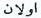
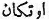

VI.
TÜRKMENLERİN ŞECERESİ
(ŞECERE-İ TERÂKİME)
Yazan: Ebülgazi Bahadır Han
Gün-Han
Şekil 33: Gün-Han ve kardeşleri.
Oğuz-Han'ın veziri, Uygur aksakallılarından birinin oğlu olan Irkıl-Hoca392 idi. Irkıl-Hoca, Oğuz-Han ölünceye kadar, hep onun veziri ve vekili gibi hizmet gördü. Irkıl-Hoca, çok akıllı ve bilgili bir kişi idi. Oğuz-Han ölüp, onun yerine Gün-Han (Kün-Han) geçince, o da Irkıl-Hoca'yı vezir yaptı ve onun sözünden hiç çıkmadı. Irkıl Hoca, çok uzun seneler yaşadı.
Bir gün, Gün-Han ile Irkıl-Hoca yalnız olarak ve başbaşa oturuyorlardı. Bu arada Irkıl-Hoca, Gün-Han'a şöyle dedi:
- "Senin baban Oğuz-Han 116 yıl hükümdarlık yaptı. Ne yazın bir gölge altında ve ne de kışın evinde uyuyabildi. Kılıç çaldı, yurtlar aldı. En sonunda da (aldığı bu ülkeleri) sizin elinize verdi. Siz, altı (kardeş) ve sizden türeyecek olan çocuklar, hep bir ağız olur ve aranızda iyi geçinecek olursanız, bu ülkelerin hepsi sizin elinizde kalır. Yok, aranızda anlaşamamazlık çıkarsa, değil bu alınan ülkeler, atanızdan kalan yurtlar bile elinizden çıkar; malınız gibi canınız da elinizden gider!" Gün-Han da Irkıl-Hoca’ya:
- "Siz, benim babama öğütler ve akıllar verirdiniz. Siz, artık benim babam yerindesiniz. Siz neyi hoş görürseniz, ben de öyle yaparım!" Dedi. Bunun üzerine Irkıl-Hoca, Gün-Han'a şöyle dedi:
- "Babanız size çok şeyler bıraktı. Siz ise altı kardeşsiniz ve her birinizin de dörder oğlu var. Bu duruma göre hepiniz 30 hakan çocuğu393 ediyorsunuz. Beni korkutan şey budur ki, dünya malı aranıza bir ayrılık düşürmesin. Ben, sürüleri, malları ve bütün serveti bu çocukların ellerine vereceğim. Onlar da ada, ünvana ve mühürlere sahip olarak birer buyruk olsunlar.394 Herkes kendi payını alınca, herhalde aralarında bir ayrılık çıkmayacaktır. Aranızda bir savaş veya haksızlık da olmayacaktır. Bu suretle bütün soylarınız da, hak yolunda yürümüş olacaklardır!"
Gün-Han, Irkıl-Hoca'nın bu sözlerini doğru buldu. Büyük bir kurultay düzenlendi. Büyük, küçük kim varsa, hepsi toplandı. Oğuz- Han'ın bırakıp gittiği mal, büyüklere çok ve küçüklere dc daha az olmak üzere, Han soyundan gelen bütün çocuklar arasında pay edildi.
24 çocuk, nikâhlı kadınlardan doğmuşlardı. Bunlardan başka odalıklardan (kuma) doğma birçok çocuklar da vardı. Onlara da gereğince bir şeyler verildi.
Gün-Han, Oğuz-Han'ın yaptırdığı altın evi diktirdi. (Bu otağın) sağ yanına altı ak çadır (örge) ve sol yanına da altı ak çadır diktirdi. Sağ tarafa kırk kulaç yüksekliğinde bir direk diktirdi. Bunun başına da bir altın395 tavuk bağlattı. Sol tarafa da kırk kulaçlık bir direk diktirdi Bunun başına da bir gümüş tavuk bağlattı.396
Han'ın yarlığı ile Bozok oğlanları ile beyleri altın tavuğu; Üç-ok oğlanları ile beyleri de gümüş tavuğu, at sürerek (okla) vurup indirdiler.397 Tavukları vuran kişilere çok hediyeler verildi.
Gün-Han da atası gibi yaptı. 900 at, 9.000 koyun kestirdi (öltürdi). Deriden yapılmış 9 havuza rakı (arak) doldurttu. 90 deri havuza da kımız saldırdı. 40 gün, 40 gece yiyip içip eğlendiler.398
2. Oğuz-Han'ın oğullarının ve torunlarının adları:
Onlar, içerek yiye dursunlar. Biz Oğuz-Han'dan türeyen oğlanların adlarını söyleyelim: Bunları söylemiş idik ama öyle de olsa, oğullarının ve torunlarının hepsini bir yerde söylemeği münasip gördük.
Oğuz-Han'ın büyük (uluğ) oğlunun adı Kün-Han; ondan küçüğünün (kiçik) adı, Ay-Han; ondan küçüğünün adı, Yulduz-Han; ondan küçüğünün adı, Kök-Han; ondan küçüğünün adı, Tağ-Han; ondan kiçiğinin adı Tenggiz-Han'dır.399
Bu altı oğlanın, kendi hatunlarından doğan dörder oğulları var idi:
Kün-Hanın büyük oğlunun adı, Kayı; 2. Bayat, 3. Alka-evli, 4. Kara-evli.
Ay-Han'ın büyük oğlunun adı, Yazır; 2. Yapar, 3. Dodurğa, 4. Döger.
Yıldız (Yultuz) - Han'ın büyük oğlunun adı, Avşar, 2. Kızık, 3. Begdili, 520 4. Kırgın.
Kök-Han’ın büyük oğlunun adı, Bayındır; 2. Becene, 3. Cavuldur, 4. Cebni.
Tağ-Han'ın büyük oğlunun adı, Salur; 2. Eymür, 3. Ala-yuntlı, 4. Üregir.
Tenggiz-Han'ın büyük oğlunun adı, İğdir; 2. Bükdüz, 3. Iva, 4. Kınık.400
Bu altı oğlanın nikâhlı olmayan karılarından (Kuma) olan oğullarının adlarını da söyleyelim ama; bu çocukların hangi oğlanlardan geldikleri malûm değildir:
Kene Küne401, Turbatlı402, Keraylı403, Sultanlı404, Oklı405, Kökli406,Suçlı407, Horasanlı408, Yurtçı, Camcı, Turumçı409 (Torumçı), Kumcı410, Sorkı. Bu (S. 32) vakitte bunlara Sorhi de derler. Kurcık411, Suracık, Karacık412, Kazğurt413 veya Kazığurt22 veya Kırğız, Teke414, Lala415, Murdaşay416, Sayir.
Bir nice iller de vardır ki, onlara da Oğuz-Han ad koymuştur. Fakat Oğuz-Han'ın neslinden gelmezler. Böyle olsalar bile, Oğuz-Han'ın şenliğinde (toy) bulundukları için, adları defterde yazılı durmuştur. Bu boyların adları da şunlardır:
Kanklı, Kıpçak, Karlık, Kalaç.
Gün-Han'ın küçük kardeşlerine ve oğullarına orun vermesi:
Şimdi on iki çadırda oturup pay (ülüş) alanlar kim idi ve o payları doğrayanlar kim idi, dışarıda atları tutup oturanlar kim idi, bunları anlatalım:
Altın çadırın şeref yerinde (tör), Kün-Han oturdu. İl ileri gelenlerinin hepsi, koyunun başını, arkasını, kuyruklu sağrısını (uca) ve bağrını, sırtının (uca) üzerinde koyup, Kün-Han'ın önüne koydular. Her kim Han olursa, payları (ülüş) da bu olsun dediler.417
Irkıl-Hoca, kapının iç eşiğinde oturdu. Koyunun göğsünü, döşünü (töş) onun önüne koydular. Kim vezir olursa, onun payı da bu olsun dediler.
Sağ yandakiler:
Sağ koldaki en ön çadırda Kün-Han'ın büyük oğlu Kayı'yı oturttular.
Kayı'ya (koyunun) sağ aşıklı kemiğini418, pay (ülüş) olarak verdiler. Bayat bu eti doğradı. Sorkı (boyu da) atlarını tuttu. Bu vakitte bu boya Sorhı diye dururlardı.
İkinci çadırda Alka-Evli'yi oturttular. "Sağ karı iligi" pay olarak verdiler. Kara-evli bunu doğradı. Lala (boyu) onların atlarını tuttu.
Üçüncü çadırda Ay-Han'ın büyük oğlu Yazır'ı oturttular. (Koyunun) "Sağ yan başını" pay olarak verdiler. Yapar bunu doğradı. Kumçı (veya Kumı) atlarını tuttu.
Dördüncü çadırda Dodurğa'yı oturttular. (Koyunun) "sağ umaca"sını pay olarak verdiler.419 Döger bunu doğradı. Murdaşuy atlarını tuttu.
Beşinci çadırda Yıldız (Yulduz) - Han'ın büyük oğlu Avşar'ı oturttular. "Sağ uyluk"ı pay olarak verdiler. Kızık bunu doğradı. Turumçı (veya Torumçı) atlarını tuttu.
Altıncı çadırda Beg-dili'ne oturttular. "Sağ yağrın"ı pay olarak verdiler. Karkın bunu doğradı. Karaçık atlarını tuttu.
Sol yandakiler:
Ön çadırda Kök-Han'ın büyük oğlu Bayındır'ı oturttular. "Sol uyluk"u pay olarak verdiler. Becene bunu doğradı. Kazğurt (Kazığurt) atlarını tuttu.
İkinci çadırda Cavuldur'u oturttular. (Koyunun) "sol yan başı"nı pay olarak verdiler. Cebni bunu doğradı. Kanklı atlarını tuttu.
Üçüncü çadırda Tağ-Han'ın büyük oğlu Salur'u oturttular. "Sol aşıklı ilig" i420 pay olarak verdiler. Eymür bunu doğradı. Kalaç atlarını tuttu.
Dördüncü çadırda Ala-Yuntlı'yı oturttular. "Umaca"yı pay olarak verdiler. Üregir bunu doğradı; Teke (veya, Teken) atlarını tuttu.
Beşinci çadırda Tenggiz-Han'ın büyük oğlu İgdir'i oturttular. "Sol karı ilik"i pay olarak verdiler. Bükdüz bunu doğradı. Karlık atlarını tuttu.
Altıncı çadırda Yıva'yı oturttular. "Sol yağrın"ı pay olarak verdiler. Kınık bunu doğradı. Kıpçak atlarını tuttu.
On iki "Yüzlük" ve yirmi dört "Oymak"ın ne demek olduğu hakkında:
Ey dinleyici ihtiyarlar, ey akıllı (anglağuçı) yiğitler, bu (söylediğimiz) sözün tarifi üzerine gönlünüzü berk tutun ve kulağınıza koyun! Bu söz üzerine düşünün!
Türkmenlerin (S. 34) eski çağlardaki "Bahşi" eri ve ömrünü harplerle geçiren yahşi kişiler bunu şöyle anlatıp dururlar:
Oğuz-Han'ın asıl hatunlarından doğan torunları yirmi dört kişi idiler. Kün-Han, bunlardan ikişer tanesini bir çadırda oturttu. "On iki Bölük" oldular. Bu on iki bölükten türeyenlere "Yüzlük" dediler. Onun için her soyun "Yüz" ü, atasına göre iyi (yahşi) olur. Her ilin ve her halkın "Yüzlerine" göre, "Yüzlük" leri vardır. Bunun anlamı bu demektir.421
Bundan başka Oğuz-Han'ın ad koyduğu birçok kişiler de vardır. Ayrıca diğer karılarından (Kuma) doğan birçok çocukları vardı. Bunlar da 24 kişidirler. Bunların hepsinin adlarını da yukarıda bir bir anlatıp durduk. Bunların hepsi, evin dışarısında otururlar. On ikisi at tutarak oturdu. On ikisi de kapıda oturdu. Bu yirmi dört kişiden doğanlara "Aymak" derler. Aslı ise "Omak"422dır . Doğrusu şudur ki, bu "Kara-Ulus"ların hepsinin adı bilinemiyor. Bunların ancak yarısını anlatırlar.
Bu çağda herkes birbirine şöyle sorar: - "İlinin Omak’ı nedir?" "Omak" sözü, Moğolcadır. Çağımızda Kalmuklar (Kalmak)da (S. 35) "Omak" derler423. Omak’ın Türkçe karşılığı, "Urug" demektir. Türkmenlerin "On iki yüzlük" ve "Yirmi dört omak" demelerinin anlamı bu demektir.424
OĞUZ-HAN'ın torunlarının, damgaları ve kuşları
Türkmenlerin tarih bilen, bilgili ihtiyarları, Oğuz-Han'ın 12 çadırda oturan 24 torununun adlarının manalarını, damgalarının nasıl olduklarını, kuşlarını ve bu kuşların adlarını şöyle anlatıp dururlar: Kayı’nın manası, "muhkem" demektir. Damgası.. Kuşu, şunkar'dır.
Bayat'ın manası, "devletli" demektir. Damgasının şekli: ... Kuşu:
Ügü425 kuşudur.
Alka-evli'nin manası, "muvafık" demektir. Damgasının şekli: ... Kuşu: Köykenek kuşudur.
Alka-evli'nin manası, "Her nerede oturursa, çadırda oturan" demektir. Damgasının şekli : ... kamçı gibidir. Kuşu : "Göbek-sarı" kuşudur.
Yazır'ın manası, İllerin ağabeysi "İller akası" demektir. Damgasının şekli : ... Kuşu: Turumtay kuşudur.
Yapar'ın manası, "Neye değer, rastlarsa onu yakan" anlamına gelir. Damgasının şekli : ... Kuşu: Karğu kuşudur.
Dodurğa'nın manası, "Yurt almasını ve saklamasını bilen" demektir. Damgasının şekli : ... Kuşu: Kızıl-karcığay kuşudur.
Döger'in manası, "yuvarlak, çevrelenmiş" (Tögerek) demektir. Damgasının şekli: ... Kuşu : "Köçken" kuşudur. (S. 36)
Avşar'ın manası, "işini çabuk yapan, işleyen" (İşini ıldam işlegüçi) demektir. Kuşu : "Çure Lâçin" kuşudur.
Kızık'ın manası "Kuvvetli veya akıllı" (Böge) demektir. Damgasının şekli : ... Kuşu : "Sanca" kuşudur.
Beg-dili'nin manası, "Sözü hürmetli" demektir. Damgasının şekli : ... Kuşu: Bahri kuşudur.
Karkın'ın manası, "Aşlı", yani yemekli; damgasının şekli: ... Kuşu: Lâçin kuşudur.
Becene'nin manası, yapıcı (Kılğuçı). Damgasının şekli: ... Kuşu: Ala-Toğan kuşudur.
Cavuldur'un manası, "Namuslu" demektir. Damgasının şekli : ... Kuşu: Buğdayık kuşudur.
Cebni'nin manası, "Bahadır" demektir. Damgasının şekli : ... Kuşu: Humay-kuşı'dır.
Salur'ın manası, "Kılıçlı" demektir. Damgasının şekli : ... Kuşu: Bürküt kuşudur.
Eymür'ün manası, "zenginler zengini" (Baylarnıng bayı). Damgasının şekli : Kuşu: Ancarı kuşudur.
Ala-yuntlı'nın manası, "Ala atlı" demektir. Damgasının şekli, beşik gibi : ... Kuşu: Yağalbay (?) kuşudur.
Üregir'in manası, "iyi iş yapan" (Yahşi iş kılğuçı) demektir. Damgasının şekli : ... Kuşu:
İgdir'in manası, büyük (Uluğ) demektir. Damgasının şekli : ... Kuşu: Karçığay kuşudur.
Bükdüz'ün manası, "Hizmetkâr" demektir. Damgasının şekli : ... Kuşu: İtelgü kuşudur.
Yıva'nın manası, "mertebesi yüksek" demektir. Damgasının şekli : ... Kuşu: Tongun kuşudur.
Kınık'ın manası "Aziz" demektir. Damgasının şekli : ... Kuşu: Çure-Karçığay kuşudur.
Oğuz İlinin antlaşma (âhidnâme) yapmaları:
Han'ın başlık ettiği bütün halk yığıldı ve şöyle dediler:
- "İster on, ister yüz, isterseniz başka şekilde oturun, herkes (koyunun) umaca kısmını yukarıda söylendiği gibi paylaşmağa alışmalıdır. Böylece herkes kendi oğulları ve beyleri ile bunları yesinler." Ayrıca dediler ki : — "Eğer bir kişi günahkâr ve suçlu ise, o adam Padişah’ın oturduğu yere namzet ve faydalı bile olsa, hatta bu kişi padişahın soyundan bile gelse veya başka bir soydan olsa, eğer Han'ın bir adamı gidip de bu adamı yargılar, muhakeme eder ise, Han'ın küçük kardeşleri veya oğulları veyahut da beylerinden birisi ellerini uzatmasınlar ve buna mani olmasınlar. Padişahın maiyetinden olup, buna kim arka olursa, arka olan o kişiyi de, Padişah’ın kapısına getirip, arkasına kılıçla vurarak, onu da ikiye bölmek gerektir. Görenler göz, işitenler de kulak sahibi olmalıdırlar. Bu suretle Oğuz neslinden, Bozok soyundan birini padişah yapmalıdırlar. Hiç kimse iki kişiyi (padişah olarak tahta) çıkarmayacaktır. Han bir tane olursa, ilde düzen kurulur (Han bir olsa, il tüzelür). İki tane olursa, il bozulur (İki bolsa, il bozulur)
Eski çağların bilgili insanları boyuna deyip durmuşlardır ki : "Bir kına iki kılıç sığmaz" (Bir kınğa iki kılıç sığmas) ; "İki erkek bir kadınla evlenip de oturamaz" (Bir hatunı iki er alıb olturabilmes); 6351 "Bir çadıra iki şeref yeri sığmaz" (Bir yurtğa iki töre sığmaz426).
Bir büyük kâğıda bu anlaşmayı yazdılar. Kün-Han'ın başkanlık ettiği, küçük kardeşleri, oğulları ilin ihtiyarlarının ileri gelenleri ve ileri gelen yiğitlerin hepsi, bu kâğıda adlarını yazıp, şöyle ant içtiler (S. 38):
- "Biz yaşadıkça, burada söylenen sözlerden ayrılmayacağız. Eğer bizden olan oğullarımız helâl süt emmiş iseler, 640 ta kıyamete kadar bu antlaşmayı okuyup ona göre hareket edeceklerdir. Yok, haramzade iseler, yurdu bozalım diye, ona göre hareket edeceklerdir", dediler. Hepsi antlaşmaya adlarını yazıp, mühürlerini basıp, Kün-Han'ın hazinesine koydular.
Oğuz-Han öldüğü zaman, Kün-Han 70 yaşında idi. Yetmiş yıl daha babasının yerinde oturdu ve adâletle hanlık yaptı. Ondan sonra da hakkın rahmetine kavuştu.
Kün-Han'ın büyük oğlu KAYI'nın Han olması:
Kün-Han'ın ölümünden sonra, Oğuz-Han'ın bütün torunları ve ilin ileri gelenleri yığıldı ve Kayı'yı Han olarak tahta çıkardılar. O da babası gibi ilde adâlet düzenini kurdu ve 23 yıl padişahlık yaptı. Bundan sonra hakkın rahmetine gitti.427
DİB-YAVKU'nun Han oluşu:
Kayı-Han'ın çok oğulları vardı. Kayı-Han, bir oğluna ulu atalarından biri olan Dib-Yavku'nun adını koymuştu. (Kayı-Han ölünce, ildeki) büyük ve küçük herkes, Dib-Yavku'yu Han olarak tahta çıkardılar.
Şekil 34 : Dib-Yafku Han ile oğulları, Kara-Han, Kür-Han, Or-Han ve Küz-Han'lar (Tpk., Haz., Nr. 1653'den).
Günlerde bir gün idi. Dib-Yavku Han halka sordu : - "Çağımızda, Oğuz-Han'ı gören kimse var mı ?" Bu soru üzerine : - "Bir kişi kaladurmuştur; bu da Salur ilinden Ulaş adlı biridir", dediler.428 (Han bunu duyunca), hemen bir kişi gönderdi ve Ulaş'ı getirtti. Ondan, Oğuz-Han'ın yurtta nasıl durduğunu, nasıl iş yaptığını, dostlarına nasıl mürüvvet ve düşmanlarına da nasıl hareket ettiğini sordu. Ulaş, ne biliyorsa hepsini anlattı.429 Bunun üzerine Ulaş'a pek çok hediyeler verdi ve yurduna gönderdi.430 (S. 39) Dib-Yavku Han'ın büyük beyleri (Uluğ begleri) : Yazır ilinden Alan ve Arlan; Döger ilinden de Irkıl-Hoca (?) idiler.
Han, bir gün av avlayıp yurt kuranda, attan düştü ve baş kemiği kırıldı ve bu yüzden de öldü.431
DİB-YAVKU'NUN VEZİRLERİ HAKKINDA
1- Ulaş: Türk onomastiğinin tanınmış adlarındandır. "Ula-" fiil kökünden yapılmış bir isimdir ve Türkçede örneği çoktur.432 Farsça Oğuz destanında, Salur ilinden Ulaş ile oğlu Ulat'dan da söz açılmaktadır.433 Ulat adına Türk onomastiğinde şimdilik rastlamıyoruz. Fakat Türkçede "Ula-t-" fiil kökü olduğu gibi434, aynı ekle isim yapmak da mümkündür.
2- Yazır ilinden Alan veya Arlan: Dib-Yavku Han'ın büyük beylerinden (Ulug bikleri) Arlan'ı Ebülgazi şeklinde yazmaktadır. Salur ilinden aynı beyin adı Farsça Oğuz destanında ise  Olan ve Valan? şeklinde yazılmıştır.435 Her iki kaynakta da Salur ilinden gösterilen bu beylerin, aynı şahıslar oldukları hakkında hemen hemen hiç şüphe yok gibidir.
Fakat Arlan adına Türk onomastiğinde hemen hemen hiç rastlamıyoruz. Bununla beraber aynı türeyişle meydana gelmiş olan Aklan, Köklen, vs. gibi kabile adlarını da tanımıyor değiliz. Arlan adına Moğol onomastiğinde de rastlıyoruz. Mesela Çingiz-Han'ın meşhur Sağ-kol komutanı Bogorçı'nın babasının adı Naku-Arlan idi.436 Arlat ( = Arulat) Moğol kabile adının da, bunun bir çoğul şekli olması çok muhtemeldir.
Olan veya Ulan şeklinde bir adı da Türk onomastiğinde görmüyoruz. Türk grameri bakımından böyle bir adın türeyişi mümkündür. Moğollarda bir Ulan adı vardır. Fakat bunun aslı da Ula'an'dır.
Yazır boyundan gelen aynı beyin adının, Ebülgazi'nin diğer nüshalarındaki yazılışı da Alan şeklindedir. Farsça Oğuz destanında ise aynı beyin adı  Alay şeklinde de yazılmıştır.437 Türk ve Moğol isimleri arasında Alay adına da pek rastlamıyoruz. Alay sözü çok geç zamanlarda meydana gelmiş bir türeyiştir. Moğolların Gizli Tarihinde geçen Altaylardaki Alay yer adı bile şüphe ile karşılanmış ve Pelliot tarafından bunun Aray okunması teklif edilmişti.438 Alay sözünün menşeleri de düşünülmüş ve bunun herhalde sondaki "-a" nın, Alaa şeklinde uzamasından meydana geldiği söylenmiştir.439 Bütün bunlarla şunu demek istiyoruz ki, Alay sözünün eskiliği biraz şüpheli ve münakaşalıdır. Alay deyimi, daha ziyade Çağatayca’da asker saflarının ön sıralarını ifade etmek için kullanılan bir deyimdi.440 Vambery, bunun köklerini de Alın (= Alı-n) sözünde aramıştı. Radlof’da Alaman sözü ile karşılaştırarak bir sonuca varmak istemişti.441 Bununla beraber Sibir Han'ı Köçüm-Han'ın oğlunun adı da Alay idi.442 Bütün bunlar bize gösteriyor ki, bu adı Alay okumada epey güçlükler vardır.
Alay şeklinde de yazılmıştır.437 Türk ve Moğol isimleri arasında Alay adına da pek rastlamıyoruz. Alay sözü çok geç zamanlarda meydana gelmiş bir türeyiştir. Moğolların Gizli Tarihinde geçen Altaylardaki Alay yer adı bile şüphe ile karşılanmış ve Pelliot tarafından bunun Aray okunması teklif edilmişti.438 Alay sözünün menşeleri de düşünülmüş ve bunun herhalde sondaki "-a" nın, Alaa şeklinde uzamasından meydana geldiği söylenmiştir.439 Bütün bunlarla şunu demek istiyoruz ki, Alay sözünün eskiliği biraz şüpheli ve münakaşalıdır. Alay deyimi, daha ziyade Çağatayca’da asker saflarının ön sıralarını ifade etmek için kullanılan bir deyimdi.440 Vambery, bunun köklerini de Alın (= Alı-n) sözünde aramıştı. Radlof’da Alaman sözü ile karşılaştırarak bir sonuca varmak istemişti.441 Bununla beraber Sibir Han'ı Köçüm-Han'ın oğlunun adı da Alay idi.442 Bütün bunlar bize gösteriyor ki, bu adı Alay okumada epey güçlükler vardır.
3. Yazır ilinden Bulan-Bey: Bu da Farsça Oğuz-nâme'de geçmektedir ve Alay'ın oğludur. Bu adı izah etmek nispeten kolaydır. Bir defa Bulan, Türk gramerinin türeyişlerine uygundur. Ayrıca da bir hayvan adıdır. Kaşgarlı Mahmud'a göre Bulan adlı bu hayvan Kıpçak illerinde bulunurmuş ve orada avlanırmış.443 Aynı hayvan adını, Altay lehçelerinde Pulan şeklinde görüyoruz.
4. Dib-Cengşü Bey: Bu beyin adı da Farsça Oğuz destanında geçer. Değerli meslektaşım Prof. F. Sümer bu adı böyle okumuştur. Mevcut kaynaklardaki yazılış (orthographie) imkânlarına göre, bu adın başka türlü okunmasına da imkân yoktur. Gerçekten daha 1073 de Kaşgarlı Mahmud, Hotan Beylerinden, Çengşi adlı birinden bahsetmektedir.444 Yalnız Hotan lehçesinde, Türkçe olmayan çok sözün bulunduğunu unutmamak lâzımdır. Sayın Prof. Sümer, yine isabetli olarak Harezm-Şah Muhammed'in kayın pederinin adının da Cenkşi olduğuna işaret ediyorlar.445 Yalnız biz de şu hususu ilâve etmek isteriz. Cenkşi bu çağda Kıpçak illerinde, ad olmaktan ziyade, daha çok ünvan olarak kullanılıyordu. Mesela Houdas'ın, Ser-Cenkşi şeklinde okuduğu Kıpçak reislerinden birinin adını, Marquart "Baş-Cenkşi" şeklinde, tefsir etmiştir ki, bu da yerinde bir görüş olsa gerektir.446 Bu ünvanın başlangıçta Çince Chang-shih'den geldiğinde hiç bir şüphe yoktur. Yalnız gerçek olan bir husus vardır: Çince Chang-shih oldukça eski çağlarda, Batı Türkleri arasına girmiş ve Cenkşi şeklinde söylenmeye başlanmıştı. Bu Çin unvanının, Cengşi/Cenkşi/Çengşi şeklinde Türkçeleşmiş olarak söylenebilmesi için epey bir zamanın geçmesi, akla yakın gelen bir gerçektir. Çünkü Uygur'lar bile bu ünvanı, henüz daha taze Çin kokusu üzerinde olarak Cangşı şeklinde söylüyorlardı.447 Moğollarda da bu ünvan Çangşı şeklinde söylenirdi.448 Çok eski bir Türk ünvanı olan Dib-Yabgu gibi, Cengşi ünvanının da burada Dib-Cenkşü şeklinde, yine çok eski bir ünvan kompozisyonu içinde görülmesi de çok önemlidir. Bütün bunlara rağmen Cenkşi/Cenkşü değişimini izah etmek de Türk ses sistemi bakımından oldukça güç bir meseledir.
5. Dürkeş veya Türükeş Bey: Kendisi Dib-Cenkşü'nün oğludur. Metinden hareket ile Dürügeş/Dürükeş şeklinde yazılmıştır. Adın sonundaki "-geş" eki, Kuzı-Yavku'nun vezirlerinden ve yine Salur ilinden Engeş'in adının son eki ile aynıdır. Bu sebeple yazılış hatası olarak bu iki beyin isimlerinin birbirlerine karıştırılmış olması çok muhtemeldir. Herhalde bu adın aslı eski Türkçede Türükeş şeklinde idi. Sonradan Batı lehçelerinde Dürükeş/Dür(ü)keş/Dürkeş şekline girmiş olmalıdır, "-geş" eki ile yapılmış, Türkçede pek çok isim vardır. Mesela Ter-/Tir, "toplamak, dermek" fiil kökünden, Tirgeş (= Tir-ge-ş), "topluluk" sözü meydana gelmiştir.449 Dürgeş/dürügeş adının türemesine imkân verecek, Türkçede birçok fiil kökleri de vardır.450 Bütün bunlar bize gösteriyor ki, bu beyin adı Türkçe idi ve metinde de yanlış yazılmamıştı. Bununla beraber, Türk onomastiğinde sık rastlanan bir ad olmadığını da söylemek lâzımdır.
6. Döger ilinden Taş-Beg oğlu Yalgu (?) veya Ilgu/Yılgu Beg'in adının etimolojisi de çok karanlıktır. Bayındır ilinden Tölü veya Tülü-Hoca'nın adının izahı da maalesef şimdilik mümkün değildir.
7. Alaş oğlu Olsun: Dib-Yavku Han'ın naibidir. Alaş veya Aluş-İdi adlı bir Moğol emiri tanıyoruz.451 Kaşgarlı Mahmud çağında Kaşgarda Aluş adlı bir köy de vardır.452 Alaş, aynı zamanda karışık renkler için, Ala karşılığında kullanılan bir renk adıdır da.453 Bütün bunlar gösteriyor ki, Alaş veya Aluş şeklinde bir adın Türkçede mevcut olması imkân dâhilindedir.
Türkçede ve bilhassa Kıpçak bölgelerinde Olsun ve Bolsun gibi adlar da vardır.454
KUZI-YAVI (Yavku)'nın Han oluşu:
(Dib-Yavku Han'ın) Kuzı-Yavı455 adlı bir oğlu var idi. Onu padişah yaptılar. 30 yıl padişahlık yapıp, öbür dünyaya gitti.456 Kuzı-Yavı Han, han olduğu zaman (Kenkeş) beyleri şunlardı:
Eymür ilinden Kerünçek (), Salur ilinden Budak, yine Salur ilinden Engeş oğlu Ötken ve onun oğlu Kul-Sarı, Han'ın "üç arka veziri" idiler. Kuzı-Yavı Han, 120 yıl padişahlık yaptıktan sonra öldü.
KUZI-YAVKU'NIN BEYLERİ
1. Küzençük: Uygurca hukuki vesikalarda Küzençük şeklinde yazılmış bir kişi adı görüyoruz.457 Ebülgazi’de  yazılmış ve Kononof tarafından da Kerünçek okunmuştur. Farsça Oğuz destanında ise bu Bey, Inal-Yavku'nun vezirleri arasında geçmekte ve açık olarak Kezençük okunmaktadır. Türk onomastiğinde Küzençük şeklinde bir kişi adı da görüldüğüne göre, bu adı böyle okumamakta hiç bir mânâ yoktur. Ebülgazi'ye göre Küzençük Eymür ilinden idi. Farsça Oğuz destanında, Karu-Dede şeklinde bir lâkabı da vardır. Altay lehçelerinde Karu/Karuu sözü, "Kudret ve kuvvet" anlamına gelir.458 Kutadku-Bilig’de geçen bir cümlede de "Melikler karuğı" deyimi, “hükümdarların en kudretlisi" manasına kullanılmıştır.459 Bunlara rağmen, Karu sözü, eski Türkçedeki Karı, yani "ihtiyar" manasına gelen kelimenin yanlış bir yazılışı da olabilir. Eski Türkçede Küsenç, "arzu ve istek," Küsenmek460 fiili de, "arzu etmek, istemek" manasına gelir. Bu adın, bunların bir küçültme şekli olması çok muhtemeldir.
yazılmış ve Kononof tarafından da Kerünçek okunmuştur. Farsça Oğuz destanında ise bu Bey, Inal-Yavku'nun vezirleri arasında geçmekte ve açık olarak Kezençük okunmaktadır. Türk onomastiğinde Küzençük şeklinde bir kişi adı da görüldüğüne göre, bu adı böyle okumamakta hiç bir mânâ yoktur. Ebülgazi'ye göre Küzençük Eymür ilinden idi. Farsça Oğuz destanında, Karu-Dede şeklinde bir lâkabı da vardır. Altay lehçelerinde Karu/Karuu sözü, "Kudret ve kuvvet" anlamına gelir.458 Kutadku-Bilig’de geçen bir cümlede de "Melikler karuğı" deyimi, “hükümdarların en kudretlisi" manasına kullanılmıştır.459 Bunlara rağmen, Karu sözü, eski Türkçedeki Karı, yani "ihtiyar" manasına gelen kelimenin yanlış bir yazılışı da olabilir. Eski Türkçede Küsenç, "arzu ve istek," Küsenmek460 fiili de, "arzu etmek, istemek" manasına gelir. Bu adın, bunların bir küçültme şekli olması çok muhtemeldir.
2. Tabak (?): Bu bey de Salur ilindendir. Farsça Oğuz destanındaki, Inal-Yavku'nun veziri Salur Damkak'la aynı şahıs olması çok muhtemeldir. Çünkü her iki vezirin de illeri ve adlarının son sesleri birbirlerinin aynıdır. Damkak adını, Inal-Yavku'nun vezirleri arasında inceleyeceğiz.
3. Engeş/Enkeş: Sonlarındaki müşterek "-geş" ekine bakarak, farsça Oğuz destanındaki Dib-Yavku'nun veziri Dürgeş'le aynı şahıs olabileceklerini söylemiştik. Orhun yazıtlarında Er-angkas-töşek şeklinde bir kişi adı da vardır. Sırf örnekleri çoğaltmak için, bu adı da hatırlatıyoruz.
4. Ötken: Kononof bunu Otkan okumuştur. Hâlbuki  yazılmıştır. Kendisi Salur ilindendir ve Engeş'in oğludur. Farsça Oğuz destanında, yine Salur ilinden Ökşi(?) adlı, Inal-Yavku'nun bir veziri vardır.461 Belki de Ötken, Ökşi'nin yanlış bir yazılışıdır. Tabii olarak hangi adın doğru olduğunu tayin etmek imkânsızdır.
Oğuz ilinin yurtları ve orada nice yıllar ne yolda oturdukları:
"Türkmen" diye, niçin ad verildiğinin zikri462: Kuzı-Yavı Han'a kadar neler olduğunu anlattık. Şimdi İnal-Han'ı anlatıyoruz. Tanrı izin verirse, İnal-Han'ın zamanından, ta bu kitabı yazıncaya kadar geçen zaman içindeki olanları anlatacağız. Bunların hepsi doğrudur. Yanlışı hiç yoktur. Ama Kuzı-Yavı Han ile İnal-Han arasında ne kadar zaman geçtiğini doğru olarak bilemiyoruz. Böyle olunca da, az anlattık. Çünkü çok söylersek yanlış olabilir. Arada 4.000 yıl vardır. (S. 40) Biz biliyoruz ki, Oğuz-Han, Keyomert463 zamanında yaşamış idi.
Inal-Yavı Han'ın veziri, Kayı halkından, Korkut-Ata idi. Bizim Peygamber’in anasının küçük kardeşleri, Abbas oğulları, Bağdat şehrinde 500 yıl padişahlık etmişlerdi. Korkut, onların zamanında yaşamış idi. Keyomert ile Abbas oğulları arasında 5.000 yıl vardır.
Kuzı-Yavı Han, Oğuz-Han'ın 5. neslidir. Bundan sonra kendiniz hesap ediniz. Kuzı-Yavı Han'la, Korkut-Ata'nın Hanı olan Inal-Han'ın arasında kaç sene olabilir.
Bu durumda biz, söylediğimiz 4.000 yılda, adları ile kimlerin olduğunu veya kimlerin olmadığını bilemeyiz. Bu kadar çok şeyi bilmesek bile. Baştan ayağa kadar olanların ne yolda olduklarını bilebiliriz. Şimdi biz, bunları anlatalım:
Oğuz ilinin gün doğusu (Kün toğuşı) : Isığ-Köl, Almalık ve çevresi, Sayram, Kazğurt-Tağı, Karaçuk-Tağı;
Kuzeyi (Temür-kazuğı) : Uluğ-Tağ ve Kiçik-Tağ.
Gün batısı: Sir-Suyı'nın ayağı, Yanggı-Kent, Kara-Kum.464 İşte Oğuzlar bu söylenen yerlerde, 4.000 veya 5.000 sene oturdular. Kimin soyu (uruğı) çok ise, onu padişah olarak tahta çıkardılar.
Meselâ Kayı'lardan birini padişah olarak tahta çıkarırlarsa, Kayı uruğı ve Bayat uruğı ile beraber daha beş, altı, az kişili uruğlar, ona koşulurlar idi.
Yine Salur'lardan bir kişi padişah olunca, Salur uruğı, Eymür uruğı (S. 41) ile beraber yine birçok az uruğlar ona koşulurlar idi.
Yazır uruğından da bir padişah çıksa idi; Yazır uruğı ile beraber daha bir nice uruğlar ona koşulurlardı.
Buna göre kıyas kılın. Kalabalık boylardan padişah çıkarırlar ve az olan boylar da ona katılırlardı. Bunlar bazan altı, yedi toplum olurlar ve bazan da üç veya dört toplum olurlardı. Bunlar, birbirlerine düşman olurlar ve karşılıklı olarak çarpışırlardı. Aralarından esir alırlardı. Ellerinde fazla esiri olanlar, bu esirleri Mâveraünnehir bezirgânlarına 700/ satarlardı.
O çağda Irak, Horasan ve Mâveraünnehir 'in padişahları, askerleri ve halkının hepsi "Tat" idi. Tat'lardan başka bir kimse yok idi. Sultan Mahmud Gaznevi'nin babası Sebük-Tegin, Kayı kabilesinin halkından idi. Onu da Türkmenler esir alarak satmışlardı. Birçok boylar da Salur boyu ile başa geçtikleri için onlara 705/düşman olmuş ve aralarında çarpışır idiler.
Becene ili, Salur iline galip gelmişti. Bunun için Salur ili, Becene halkına "İt-Becene" adını takmışlardı. Becene ilinin Toymaduk adlı bir padişahı var idi. (Bu padişah), ordusu ile gelip, Salur ilini basıp, Salur Kazan-Alp'in babası Cıcaklı’yı465 esir alarak gitmişti. Üç yıl sonra (Salur Kazan-Alp), Engeş 710/adlı adamını göndererek bir yok mal verip, babasını geriye almıştı.466
(S. 42) Bunları söylemekten maksadımız şu ki, bu savaşlarda galip gelenler yurtlarında otururlar ve mağlup olup da canlarını kurtaranlar ise, Mâveraünnehire kaçıp giderlerdi, öyle oldu ki, vara vara Türkmenlerin çoğu, vilâyetlere düştü. Geride azı kaldı. O çağda, Türkmenlerin esas taraflarında oturan iller çok idi. Bunların nasıl olduğunu anlatalım: "Diğer illere nazaran, 715/Türkmenlere yakın oturanlar Çin (Hıtay), Nayman ve Kanklı'lar idiler. (Hıtay, Nayman ve Kanklı'lar), Türkmenlerin geriye kalanlarını basmağa başladılar. Bunun üzerine Isığ-Köl, Almalık, Sayram, Uluğ-Tağ ve Kiçik-Tağ gibi yurtlarını bırakarak Sir-Suyı'nın ayağına geldiler. Padişahları Yengi-Kent'de oturdu ve kendileri de Sir-Suyı'nın iki tarafında yaylayıp kışlamağa başladılar. On nesil (arka) boyunca bu bölgelerde oturdular.
Harita 4: Türkmenlerin yurdu İsficab bölgesi ve Kazıgurt Dağı
Maveraünnehr'e gelen Türkmenlere Tacikler, önceleri Türk derler idiler. Beş, altı nesil geçtikten sonra, bunlar da Taciklerin yerine ve suyuna uydular. Yavaş yavaş bunların da enseleri kısa, gözleri büyük, yüzleri küçük ve burunları da büyük olmağa başladı. Türkmen yurduna gelip oturan illerden esirler ve iş adamları Maveraünnehr'e gelmeğe başladı. Tacikler, onları gördüler ve onlara da Türk demeğe başladılar. Eski Türklere ise, "Türk'e benzer" (Türk-mânend) diye ad koydular. Bunun manası, Türk'e benzer, Türk'ü okşar (Türkke ohşar) demektir.
Cahil halk (Kara halk), Türk-mânend sözünü söylemesini bilemedi. Bunun için Türk-mânend sözü yerine, Türkmen dediler.467
INAL-YAVI'nın Han oluşu:
Kayı Kara-Hoca'nın oğlu Korkut-Ata, Salur Engeş-Hoca ve Yıva Şiban-Hoca'nın başlık ettiği bütün Oğuz ili yığıldı ve Kayı halkından Inal-Yavı'vı padişah olarak tahta çıkardılar.468
Veziri Korkut-Ata idi. korkul-Ata ne dese, Inal-Yavı onun sözünden çıkmaz idi. 295 yıl ömür sürdü. Üç yaşında vezir oldu. (S. 43) İki oğlu var idi:
Büyük oğlunun adı, Ali469, küçük oğlunun adı ise, Doylı-Kayı idi.470 İnal-Yavı Han ölünce, onun yerine Doylı-Kayı'yı Han olarak tahta çıkardılar.
INAL-YAVKU'NUN BEYLERİ
1. Korkut-Ata: Metinde, Kayı Kara-Hoca (Kara-Koca)'nın oğlu Korkut-Ata deniyor. Farsça Oğuz destanında Kara-Hoca oğlu Korkut-Ata, Doylı-Kayı Han zamanında meydana çıkar. Farsça destana güre, Korkut, Kayı boyundan değil, Bayat ilindendir.471 Fakat her iki metinde de Korkut, 295 yıl yaşamıştır.
2. Engeş-Hoca: Bu vezir, aslında Kuzı-Yavku Han'ın adamı idi. Sonradan Salur-Kazan'a da akıl hocalığı etmiştir. Inal-Yavku zamanında, yine ortaya çıkar. Yukarıda da söylediğimiz gibi, Türk Mitolojisinde böyle ermiş ve büyük kişiler çok uzun ömürlü olurlar ve bir hanedanın hemen hemen bütün padişahlarına akıl verirlerdi. Nitekim Korkut-Ata da 295 yıl yaşamıştır. Han-nâme'deki vezir (Atalık) Ulug-Arslan 1200 sene ömür sürmüştü.
3. Şıban-Hoca: Yıva ilinden gelen bu beyin adı, Ebülgazi'de Şeyban, Farsça Oğuz destanında ise Şaban şeklinde yazılmıştır. Biliyoruz ki Şıban veya Sıban, Çingiz-Han'ın büyük oğlu Cöçi'nin beşinci oğlu idi. İslamiyet’in tesiri altında, Şıban'ın adı Şeyban haline girmişti. Farsça Oğuz destanındaki Şaban şekli de, yine İslami anlayışın tesiri altında yazılmıştır. Şıban'ın aslı da Uygurca bir addır. Yani Moğolca değil; Türkçedir. Türklerde bu adın aslı, "Sıban" şeklinde söylenirdi. Çingiz-Han zamanında bu ad, Moğollarda Şıban olarak söylenmeğe başlandı.472
4. Damkak (Tamgan?) : Bu da Salur ilindendir. Yalnızca Farsça Oğuz destanında geçer. Damkak adının yazılış bakımından son kısmının, Kuzı-Yavku Han'ın veziri Tabak'ın adına benzediğini söylemiştik. Hangisinin doğru olduğunu kesin olarak söylemenin imkânı yoktur. Türk onomastiğinde Tamgan adına rastlıyoruz.473 Eski Türkçede Tamgak, "damak ve boğaz" anlamına gelir.474 Fakat bu söz, Doğu Türklerinin telaffuzuna göre söylenmiş bir sözdür. Oğuz ve Kıpçaklar, bu sözü yine Tamak olarak söylerlerdi.475 Hayvanların boğaz kısımlarından yapılmış kürklere de Tamgak denirdi.476 Fakat meşhur bir vezirin adının, böyle manalar ifade eden sözlerden çıkması biraz güç düşünülebilir bir konudur.
DOYLI-KAYI'nın Han oluşu:
Doylı-Kayı477 her zaman Korkut-Ata’nın sözüne göre hareket ederdi. Korkut'tan başka Inak-Begleri de 478vardı. Bunlardan birisi, Bayındır ilinden Bükdüz479 adlı biri; diğeri de, İgdir ilinden Dönge480 idi.
Doylı-Kayı çok yıllar padişahlık etti. Oğlu yok idi. Aşını yedi, yaşını yaşadı, uzun ömür buldu ve sonra da öldü.
Doylı-Kayı'nın küçük kardeşi ERKİ'nin Han oluşu ve oğlu TUMAN'ın dünyaya gelişi:
Doylı-Kayı'nın kendine çok yakın bir kardeşi var idi.481 İlin şöhretli bir efendisi (igü) olarak oturur idi. Adı Erki idi. Bütün Oğuz ili yığılıp geldiler. Korkut-Ata'nın başlık ettiği beyler şöyle sordular : - "Han'ın hanımlarından (Köç) hiç birinin çocuğu var mı?" Daya- Hatun adlı bir hatun geldi ve : - "Han'ın hatunlarından biri hâmiledir. Ümidimiz var ki, çocuk doğacak", dedi.
Bir nice günden sonra, Han'ın ölüm aşını (Ölük aşı) veriyorlardı. Bu sırada Han'ın oğlu doğdu, denince hepsi sevindiler. Haber getirenler de müjde (Süyünçi) (S. 44) dilediler.
Erki'nin başlık ettiği bütün beğler müjde verdiler. Halkı toplantı için davet (Savun) ettiler. Herkes kendi himmetine göre hediye ve kurban (Sokum) getirdiler. 400 at 4.000 koyun kestiler. Erki, derilerden yapılmış üç havuz diktirdi.482 Bir ay, gece ve gündüz şenlik yaptılar. İyi veya kötü herkes, yeme ve içme ile meşgul oldular, ihtiyarlar yaşını unuttu; fakirler de malsızlıklarını unuttular. Zenginler de ölümün ne olduğunu düşünemediler. Bunun üzerine Oğuz ili Korkut’a şöyle dedi:
- "Gel, bu oğlana çok iyi bir ad koy!" Korkut da : - "Bunun adı Tuman-Han olsun", dedi.483 Bunun üzerine halk:
- "Daha iyi bir ad koy!" Dediler. Korkut da:
- "Bundan daha iyi ad olmaz", dedi ve ilâve etti :"Doylı-Han öldüğü zaman, yurdumuzu duman tutmuş ve karanlık olmuştu. Bu oğlan dumanda doğdu. İkinci olarak, gönlümden iyi bir alâmet (İrim) doğdu. Böyle deyip, yaptım. Onun için de adını Tuman koyuverdim. Çünkü duman uzak durmaz, fakat çabuk gider, yok olur. Dumanlı gün, güneşli olur. Dumanın içi aydınlık olmaz. Azıcık (Azğana) bir dumanı, ben bu oğlanın küçüklüğüne benzetiyorum. Onun sonunu da, bir güneşe benzetiyorum. Onun bir yiğit olup, babasının tahtında oturup, devletli ve uzun ömürlü olmasına benzetiyorum!"
Bunu işiten halkın hepsi Korkut'a : - "Aferin! Aferin! Deyip, çok memnun oldular ve Tuman''a çok dualar kıldılar. Bundan sonra, Korkut’un başlık ettiği bütün halk Erki’ye de şöyle dedi:
- "Bir ay toy yaptırıp ziyafet verdin; fakat yemeklerin hâlâ bitmedi. Havuzlara döktürdüğün kımız ve ayranın, (S. 45) bir gölün suyundan da çok idi. Artık bundan sonra size Köl-Erkin-Han diyeceğiz! Tuman senin öz oğlun olsun. Ağabeyin Doylı-Han'ın tahtında otur ve hanlık kıl! Eğer Tuman büyür de bir yiğit olursa, ona ne vereceğini kendin daha iyi bilirsin!" Böylece Köl-Erkin'i Han yaptılar ve hepsi beraber iyi hayat sürüp oturdular.

Şekil 35 : Tuna-Han'ın Kara-Barak adlı köpeği kurtları boğuyor (Tpk., Haz. Nr. 1623'den).
Tuman büyüyüp bir yiğit oldu. Doylı-Kayı'nın eski adamları (Bayrı kişileri) şöyle bir söz ısmarladılar:
- "Padişahlık babandan sana miras kalmıştır. Hanlığı bütün halk birleşip Köl-Erkin'e muvakkat olarak vermişlerdi. O şartla ki, sen büyüyünce, Hanlığı yine sana verecekti". Tuman da bu sözü, bir kişi göndererek Köl-Erkin'e duyurdu. Bunu duyan Köl-Erkin de, durumu Korkut'a, yalnız başına oturdukları bir sırada anlattı. Bunun üzerine ilin ileri gelenlerine emir gönderilerek çağrıldı ve büyük bir şenlik yapıldı.484
Köl-Erki Han, Korkut'u kendi evinin şeref köşesine (Tör) oturttu. Kımız dolu bardağı eğilerek (Yükünüp) sundu. Korkut kımız içti ve halk da yemek yedi. Bundan sonra Köl-Erkin Han şöyle dedi:
- "Ey il, Korkut-Ata, illerin ileri gelenleri ve halk! Hepiniz! Sizler bilirsiniz ki, padişahlık Tuman'ın hakkıdır. Bu zamana kadar, Tuman genç idi. Onun için, ben onun işini yapadurur idim. Şimdi Tuman, artık büyük bir yiğit oldu. Onun için babasının tahtını ona veriyorum." Bunun üzerine bütün halk Korkut'a dönüp şöyle dediler485:
- "Bütün Oğuz ilinin dileği sizin elinizdedir. Nasıl münasip görür isen, öyle yap!" Korkut bu sözü işitince, bir kişi göndererek Tuman'ı getirtti ve evinin ortasında oturtup ona şöyle dedi:
- "Baban öldü. Sen küçük yaşta iken, geri kaldın. Köl-Erki, senin baban oldu. (S. 46) Dünyaya gelişinden bu yaşa kadar, senin büyüğün oldu ve sana çok emekler verdi. Taç, taht ve il ile bütün yurt senindir. Yalnız sizden bir dileğimiz vardır. Bu dileğimiz de, biraz daha sabretmenizdir. Zaten amcanın ömrü az kalmıştır!" Korkut-Ata böyle deyince, Tuman da ona şöyle cevap verdi:
- "Bütün Oğuz ilinin en iyisi, babamın veziri ve benim de babam yerindesin. Sözlerinizi kabul ediyorum!"
Köl-Erkin'in çok güzel bir kızı vardı. Anne ve babasının bütün işlerine vakıftı. Korkut, Köl-Erki ile birlikte bu kızı Tuman'a söz kesti ve yedi gece, yedi gündüz büyük bir düğün yaparak, padişahlara lâyık elbiseler hazırlattı. Tozuk-Barlan486 adlı bu kızı, böylece Tuman'a verdiler.
O çağda Avşar ilinin de bir padişahı var idi. Bu Han'ın adı da Ayna-Han idi. Ayna-Han adlı bu han, bu kızı daha önce kendi oğluna istetmişti. Köl-Erki de bu kızı onun oğluna vermeğe razı olmuştu. Ayna-Han, kızın Tuman'a verildiğini duyunca, askerini toplayıp (Çerik tapıb), Köl-Erki'nin üzerine yürüdü, Köl-Erki de büyük bir ordu ile onun karşısına çıktı. Vuruştular. (Köl-Erki), Ayna Han'ı mağlup etti ve Ayna'nın oğlunu öldürdü. Avşar ilinin askerini kırdı. Ayna-Han'ı da kovarak onun yurduna vardı. Yurdunu alarak altı ay orada oturdu. Ayna-Han da kaçıp (S. 47) başka bir ile gitti. Köl-Erki and içti ve Ayna Han'a bir elçi göndererek şöyle dedi.487
- "Bu kötülüğü (Yamanlık) yapan sen olmadın. Bunu oğlun yaptı. Böyle yaptığı için de cezasını buldu. Şimdi biz artık seninle birer kardeş olduk. Gel de yurduna sahip ol. Ben artık yurduma dönüyorum." Elçi, Ayna-Han'a488 vardı ve Köl-Erkin'in sözlerinin hepsini ona söyledi. Ayna Han da onun bu sözlerine inanıp, yurduna geldi ve Köl-Erki'yi gördü. Köl-Erki de Avşar Han'ının yurdunu kendisine geri verdi. 805/ Ondan sonra da kendi yurduna döndü.
Tuman'ın bir oğlu olması ve ona YAVLI adının konulması, bir yiğit olduktan sonra, ona yeniden KANLI-YAVLI adı verilmesi:
Tuman'ın, Köl-Erki'nin kızından bir oğlu oldu. Adını Yavlı489 koydular. Doğuştan âsil (Toğuşlı) ve alp bir çocuktu. Büyüyüp bir yiğit oldu. Günlerden bir gün su kenarında, diğer yiğitlerle beraber oynuyordu. Bu yiğitlerden birisi ile vuruştular. Yavlı ona vurmak istedi; fakat vuracak hiç bir şey bulamadı. Yakınlarında, bir top kızğan490 dikeninden başka bir şey yoktu. Bunun için, dikeni tuttuğu gibi kökünden çıkardı ve karşısındaki yiğidin boynuna vurdu. (Bu dikeni) vurur vurmaz yiğidin boynu kırıldı ve öldü.
Bunun üzerine, Köl-Erki-Han, Tuman, Korkut ve bütün beyler toplanıp oturdular. Yavlı'nın yaptığı bu işi birbirlerine anlattılar. Büyük, küçük; iyi veya kötü kim varsa, bu olayı gören veya işiten herkes, onun gösterdiği bu cesarete hayran kaldılar. Tuman, konuşmağa başladı ve şöyle dedi (S. 48) :
- "Bu oğlanın adına şimdiye kadar Yavlı denirdi. Şimdi artık ona Kanlı-Yavlı demek gerek", dedi. Bunun için de, artık herkes, bütün halk, ona Kanlı Yavlı demeğe başladı.491
Günlerden bir gün idi. Köl-Erkin Han tahtında oturmuş idi. Tuman dahi orda hazır idi. Kanlı-Yavlı kapıdan girip geldi. Orta yerde oturup, Köl-Erkin'e baktı ve şöyle dedi:492
- "Ey baba! Oturduğun bu taht, ulu atam Doylı-Han'ın oturduğu bir tahttır. Bu vakte kadar, babam Tuman'a, 'gençtir', diye vermedin. Peki, bu tahtı şimdi niye vermez durursun?" Köl-Erkin Han başını önüne eğdi ve böylece epey bir süre oturdu. Sonra bir fırsat buldu, başını kaldırdı ve Kanlı-Yavlı'ya şöyle dedi:
- "Bu sözü ben, senden önce, nice söyler idim ve ümid kılar idim. Evvelki gün sen, artık bir dikenle, bir kişinin boynunu da kırdın. Doğru söylersin! Böyle, iyi olur; yahşi olur. Tahtı da şimdi, babana vermek gerek!"
TUMAN'ın Han olması:
Köl-Erkin Han, halkından bu sözü duyunca, Korkut'un başlık ettiği bütün Oğuz iline adamlar gönderdi ve onları getirerek büyük bir toy ve şenlik kıldı. Tuman'ı kendi tahtına Han olarak oturttu. Sonra da Köl-Erkin onun karşısında ayakta durdu ve Tuman-Han'a şöyle dedi:
- "Babanın ölümünden sonra, benim bu tahta çıkıp, Oğuz İlini idare edeli, tam otuz beş yıl geçti. Senden de ümidim odur ki, ben bu ili nasıl iyi veya kötü idare ettim ve ne yol ile padişahlık ettim ve hangi yolda yürüdüm ise, sen de o yol üzere yürüyesin!" Bunun üzerine Tuman-Han, Köl-Erkin'e şöyle cevap verdi:
- "İyi söylersiniz, yahşi söylersiniz! Sizin bu nasihatlarınızı kabul ediyorum. Talihim ancak sizin bu sözleriniz sayesinde yâver olacaktır!" Böyle sözleşildi, böyle konuşulduktan sonra, Köl-Erkin, (S. 49), Kanlı-Yavlı'ya da bakıp şöyle dedi:
- "Ey kızımın oğlu! 'Kızdan doğan'ın dostluğu olmaz', derler. Böyle işitmiştim. Eski çağlarda söylenen bu sözleri yalan kılmadın!"
Tuman-Han dört ay hanlık kıldıktan sonra, Korkut-Ata'nın başlığında toplanan bütün halk, Tuman'a geldiler ve şöyle dediler:
- "Tanrı'ya şükür et ki, Kanlı-Yavlı gibi bir oğlun var! Bizce münasip düşen şudur: Padişahlığı oğluna vermelisin ve kendin de artık, ayş ve işret ile meşgul olmalısın!" Tuman da bu teklifi kabul etti ve Padişahlığı oğluna verdi. Kendisi de ferah bir gönülle Tanrı'ya ibadet etti ve Tanrı'ya kulluğunu gösterip oturdu.
KANLI-YAVI'nın Han oluşu:
Kanlı-Yavı çok acayip ve başka türlü bir bahadır idi.493 Kendisi çok iyi bir atıcı ve alp bir er idi. Dört tarafındaki yurtların hepsini aldı ve kendine tâbi kıldı (baktırdı) :
| "Kurt koyuna, pars geyiğe,
|
|
"Böri koyğa, yolbars keyikke,
|
| "Kartal tavşana, şâhin kekliğe
zarar vermedi.
|
|
"Bürküt koyanğa, karcığay keklikke
|
| "İlini düzenleyip,
|
|
"İllerini tüzüb,
|
| "Düşmanlarını bozup,
|
|
" Yağılarnı bozub,
|
| "Padişahları kırıp,
|
|
"O zamanındaki padişahların üzüb
|
| "Doksan yıl padişahlık kılıp,
öldü.
|
|
"Doksan yıl padişahlık kılıb, ölti.
|
MOR-YAVI'nın Han oluşu:
Kanlı-Yavı’nın iki oğlu var idi. Büyüğünün adı Mor-Yavı494, küçüğünün adı ise Kara Alp-Arslan idi. Oğulları yetişince Kanlı-Yavı, yurdunu ikiye böldü: Türkistan ile Yengi-Kend'i Mor-Yavı''ya verdi. Talaş ile Sayram'ı da Kara Alp-Arslan'a verdi.
Aradan bir nice yıl geçtikten sonra, Kara Alp-Arslan'ın ağabeysi (Akası) Mor-Yavı ile arası açıldı. Birbirlerine düşman oldular. İlin ileri gelenleri (İl yahşıları) araya girip, her ikisine de nasihatler ettiler ve gelin barışın dediler. Fakat Kara Alp-Arslan'ı bir türlü razı edemediler. En sonunda, her ikisi de asker toplayıp, Sayram495 şehri üzerinde vuruştular. Bu harpte Mor-Yavı galip geldi. (S. 50). Kara Alp-Arslan harpte öldü, (Mor-Yavı), kardeşinin bütün illerini aldı ve bir yıl da orada kaldıktan sonra evine geri döndü.
Kara Alp-Arslan'ın küçük bir oğlu vardı. Mor-Yavı, bu çocukla küçük kardeşinin diğer adamlarını beraberine alarak kendi yurduna gitmişti. Aradan çok yıllar geçti ve oğlan da büyüdü. Mor-Yavı Han, günlerden bir gün oturup dururken, küçük kardeşinin oğlu yanına geldi. Mor-Yavı Han, çocuğun yüzüne bakıp şöyle dedi:
- "Eğer baban bilgisizlik etmeyip de, bana düşman olmasaydı, sen de böyle yetim kalmazdın! Sen de böyle sararıp da solmazdın!" Deyip, Hüngür hüngür ağlamağa başladı. Sonra yine oğlana dönüp şöyle dedi:
- "Senin adın Alp-Tuğaç496 olsun!" Dedi. Bundan sonra oğlanın babasının adamlarını da getirtti ve onları da Alp-Tuğaç'ın yanına verdi. (Kara Alp-Arslan'ın) eski yurdunu da Alp-Tuğaç'a verip, kendi yurduna gönderdi. O zamanlar esir olarak alınıp getirilenlerin hepsinin de geri gönderilmesini emretti.
Alp-Tuğaç baba yurduna vardı ve artık orada oturdu. Dört tarafa dağılıp giden adamlarının hepsi geri dönüp onun yanına geldiler.
Mor-Yavı Han, 75 yıl497 padişahlık yaptıktan sonra ölüp, öbür dünyaya gitti.
Mor-Yavı Han oğlu KARA'nın Han oluşu:
Mor-Yavı Han'ın kendi hatunlarından hiç çocuğu yoktu.498 Ürce ( )-Han adlı bir Han vardı.107 Mor-Yavı Han, bu Han'ın ilini aldı. Bu arada onun hatunlarından birini de esir almıştı. Bu hatunu, bir nice gün yanında tuttuktan sonra kendi yurduna gönderdi. Mor-Yavı Han da savaştan dönüp, yurduna geldiğinde kadın, "Ben Mor-Yavı Han'dan hâmile kaldım", Dedi ve birkaç ay sonra bir erkek çocuk doğurdu. Doğan çocuğun adını da Kara499 koydular. Çocuk, dayılarının yanında büyüyüp bir yiğit olduktan sonra, kaçıp babası Mor-Yavı Han'ın yanına geldi. Mor-Yavı Han da onu, oğlu olarak kabul etti (oğul kıldı). Mor-Yavı Han öldükten sonra, halk toplandı ve Kara’yı Han olarak tahta çıkardılar. Kara-Han kendi ilinin halkı ile çok iyi geçindi ve ondan sonra öldü (S. 51).
BUĞRA’nın Han oluşu:
Kara-Han’ın Buğra adlı bir oğlu vardı. Kara-Han ölünce, Buğra halk tarafından Han olarak tahta oturtuldu. Buğra-Han eski atalarının hepsinden daha üstün (artuk) çıktı, Büyük bir ordu ile gelerek Buhara ve Semerkand'ı aldı. Kardeşleri kendisine düşman idiler. Bu sebeple kendi yurdunda duramadı. Yurdundan ayrılarak gidip Hârezm'i aldı. Hârezm'e çekilerek orada çok yıllar padişahlık etti. Bir gün kuzeye doğru (arka tarafığa) bir akın yapmıştı. Ordusu ile beraber gidip dururken, Han etrafındakilere şöyle dedi:
- "Canımız buğday unundan yapılan bir aş isteye durur!" Bunu duyan ahçılar (bavurçı) hemen erişte aşı (ögre) gibi yemekler yaptılar. Fakat onlardan hiç biri Buğra-Han'ın istediği yemeği yapmağı beceremediler. Bunun üzerine Han, un getirtti ve bir hamur yaptırttı. Bundan sonra da Han, yemeği kendi eli ile yapmağa başladı ve kazana koyarak kendi eli ile pişirdi. Yemeği yaparken, beğleri de Han'a yardım ettiler. Han, yemeği pişirip yedikten sonra, yanındakilere:
- "Bu aşın adı, "Buğra-Han aşı" olsun", dedi. Bugün de halk içinde, "Buğra" adı ile anılan ve pişirilen yemek, işte bu yemektir.
Han'ın üç oğlu vardı: Büyük oğlunun adı, İl-Tekin; 2. sinin adı, Kuzı-Tekin500,3. sünün adı ise, Beg-Tekin idi. "Tekin" sözü, eski Türkçede "güzel yüzlü" (yahşi sûretli) anlamına gelir.
Han ihtiyarlayınca, padişahlığı Kuzı-Tekin'e verdi. Kendisi de bir köşeye çekilip, sükûnet içinde yaşamağa başladı. Kendisinin Baber (Babur ?)501 adlı bir hatunu vardı. Bu hatun çok akıllı, ermiş, çok temiz ve her bakımdan mükemmel bir kadındı. Bu hatun ölünce Han büyük bir kedere kapıldı ve büyük bir yas tutarak bir sene müddetle, hiç kimse ile konuşmadı. Evinden de hiç çıkmadı.
Kuzı-Tekin, bir gün babasına (S. 52) :
- "Daha ne kadar yas tutup, gam içinde boğularak oturacaksın?
Biraz ava çıkın da, gönlünüz açılsın!" Dedi. Bundan sonra da kabasını yanına alarak, her gün bir yere ava veya gezmeğe çıkardı. Bir nice günden sonra Buğra-Han'ın gamı kayboldu ve gönlüne hava ile heves geldi. İşte tam bu sırada Buğra-Han'ın oğlu Kuzı-Tekin, babasına şöyle dedi:
- "Baba, beğler diyorlar ki en münasibi, artık Han'a bir eş bulmaktır!" Bunu duyan Buğra-Han da oğluna şöyle der:
- "Öyle Hatun nerden bulacaksınız ki, gelsin de annenizin yerini tutsun?" Kuzı-Tekin de:
- "Anam kadar olmasa bile, yarısı kadar olsun, baba", der. Buğra- han, "Ben artık ihtiyar oldum", diyerek evlenmeği kabul etmezse de oğlu Kuzı-Tekin bu işi babasının gönlüne bırakmaz.502
Avşar ilinde, Egrence503 adlı birinin, güzel ve iyi (körkeli, yahşi), kendi yurdunda at bile güden bir kızı vardı. Kuzı-Tekin, bu kızı alıp babası Buğra-Han'la evlendirdi.
Düğünden sonra kızın gönlü bulandı ve aklına kötü şeyler gelmeğe başladı. Kendi kendine şöyle dedi : - "Herhalde Kuzı-Tekin'in bende gözü olmalıdır. Bunun için de bir bahane bulup, beni babasına aldı. Belki de benimle gizli olarak, yiyip içmek ve eğlenmek istiyordur. Yoksa benim gibi genç ve güzel bir kızı ihtiyar babasına niçin alsındı?"
Günlerden bir gün Kuzı-Tekin, şu babamı göreyim diye yola çıkar ve babasının yurduna gelir. Evden içeri girdiğinde, babası horlayarak yatıyor ve kız da yalnız başına oturuyormuş. Kız, Kuzı-Tekin'in geldiğini görünce, hemen yerinden kalkıp, oğlanın önüne gidip, yüzünü gözünü ona sürmeğe başlamış. Kuzı-Tekin'i okşamış. Kadınlar kendi kocalarına nasıl yaparlarsa, kız da Kuzı-Tekin'e aynen öyle yapmış. Kuzı-Tekin bunu görünce, içinden şöyle söylenmiş : - "Bu kadın benim anamın yerinde oturuyor, öbür taraftan da bana sevgili rolü yapıyor" (S. 53).
Yine günlerden bir gündü. Kadın, Kuzı-Tekin'i yalnız bulunca, hemen ona şöyle söyledi:
- "Benim hâlimden hiç haberin var mı? Ben sana çoktan bir âşık oldum! Ne geceler uykum ve ne de gündüzler kararım var! Benim hâlimden halâ hiç bir şey anlamıyorsun! O halde beni niçin aldın da böyle ihtiyar bir adama verdin?" Kuzı-Tekin de Hatuna:
- "Sen benim annemin yerinde oturuyorsun. Eğer bu günden sonra, sen bu durumunu değiştirmezsen, seni parça parça eder ve her parçanı da bir yere atarım!" Dedi.
Kadın bunu duyunca, baktı ki başka bir çare yok. Hemen gidip durumu kardeşlerinin karılarına anlattı. Oturdular, aralarında konuştular, anlaştılar. Bunun üzerine kardeşlerinin karıları kıza şöyle dediler:
- "Kuzı-Tekin'in bu olayı, Han'a ve halka anlatmasından önce, senin herkese duyurman gerek! Yoksa ölüme gidersin", dediler. Hepsi birleşip bir kadın gönderdiler. Kadın, Kuzı-Tekin'in evine gizlice girdi ve Tekin'in çizmesini çalarak getirdi. Bundan sonra da çizmeyi alıp götürdü ve oğlanın babası Buğra-Han'ın evine koydu.
O gece Han evde yoktu. Ava gitmişti. Gece yarısından sonra da kar yağmağa başladı. Seher vakti gelince, kadın başladı feryada. Şafak söktüğü zaman, kadının ağlayıp durduğunu bilmeyen kalmamıştı. Yurtta kim varsa, kadın ve erkek, herkes koşarak otağın kapısına gelip yığıldılar. Baktılar ki hanım, yüzünü gözünü yırtmış kan içinde ağlayıp duruyor. Ağlarken, bir yandan da şöyle diyordu:
- "Seher vaktinde yatarken, baktım ki koynuma birisi girdi. Gördüğüme göre, bu Kuzı-Tekin olmalıydı! Bana, 'Benden kaçma, ben sana âşık oldum ve bunun için de seni alıp babama verdim; gündüz benim, gece de babamın ol; yoksa ihtiyar babamın kadın nesine idi!" Dedi. Kadın yine sözüne devam ederek : - "Bu sözleri duyunca ben de kaçtım (S. 54). 'Bir insanın annesine böyle bir iş yapması nerede görülmüştür', dedim. Kuzı-Tekin bu sözümü duyunca, hemen bırakıp kaçtı!" Diye bağırıyordu.
Bu sözleri duyan ilin kadınları, buna inanmadılar ve : - "ispat et!" Diye söylendiler. O da:
- "İspata ne lüzûm var! Bundan iyi delil olur mu? Yerde kar var, izlere bakın", dedi. Kardaki izlere bakanlar, izlerin Kuzı-Tekin'in evinden çıkıp otağa geldiğini ve sonra da otağdan çıkıp Kuzı-Tekin'in evine gittiğini gördüler. Az sonra Kuzı-Tekin geldi. Ayağını ize koyup koyup ölçtü. Tam kendi ayağı idi.
Buğra-Han avdan gelince ona her şeyi anlattılar. Buğra-Han'ın başlık ettiği bütün halk toplandı ve Kuzı-Tekin'i çağırarak ona şöyle dediler:
- "Geceleyin senin yaptığın bu iş nedir?" Kuzı-Tekin (daha önce) kadının neler yaptıklarını ve (neler söylediklerinin) hepsini anlattı. Ayrıca:
- "Bundan daha fazlasını anlatmağa utanırım! Ayrıca bu kadını alıp babama veren benim. O, benden evvel benimle oynaşmak istedi! Dedi.
Halk ikiye bölünmüştü. Halkın yarısı kadına, yarısı da Kuzı-Tekin'e inanıyordu. En sonunda halk birleşti ve hanımın yanında yatıp (mihmandarlık eden) kadınları Han'ın yanına getirdiler. Onlara sordular. Fakat hiç birisi, hiç bir şey söylemedi. Onlara doğruyu söylemeleri için (zor gösterip, döğmeğe başladılar). Tam ölmek üzere iken konuşmağa başladılar. Baştan sona kadar geçen olayları ve aralarındaki konuşmaların hepsini anlattılar. Avşarlı kadınların neler (öğütledikle- rini), çizmeyi nasıl çaldıklarını birer birer söylediler. Bunun üzerine Buğra-Han, Kuzı-Tekin'e:
- "Böyle bir fitne olur diye bu kadını almak istememiştim. Sen benim isteğime uymadın. Şimdi sen bu (kadını) ne yapacaksın? Bu (işleri) sen iyi bilirsin!" Dedi. (S. 55)
Kuzı-Tekin, kulağı, imli, işaretli beş tane kısrak (baytal) getirtti. Kadının iki ayağını, iki elini ve boynunu kısraklardan birinin kuyruğuna bağladı. Kısrakların butlarına birer iğne sokup, atları ürkütünce kadını beş parçaya böldüler. Kısraklardan her biri kendine bağlı bar- çayı alarak, kendi yaylasına gitti.
Buğra-Han, çok yıllar padişahlık yaptı ve 90 yaşında öldü.504
Buğra-Han'ın oğlu KUZI-TEKİN'in Han oluşu:
Kuzı-Tekin babasının tahtına oturup, düşmanları ağlatıp, dostları güldürüp, ilinde adaleti kurup, fakirlere hayır ve ihsan kılıp, 75 yaşına geldiğinde, oğlu Arslan’ı kendi tahtına çıkarıp, öldü.
Kuzı-Tekin oğlu ARSLAN'ın Han oluşu:
Arslan505, babasının tahtına geçip Büyük Han (Uluğ Han) oldu. Çok yıllardan sonra, Suvarcık ili ona düşman oldu. Arslan o ile vardı ve Suvarcık ilini mağlup ederek, geriye kalan halkı da kendisine tabi kılarak (bakındırub) geriye döndü. O ilde bir oğlan çocuğunu da esir ederek yanında getirmiş ve ona Suvar (ayrı yazılışı: Suvarcık) koymuştu. (Bu çocuğu) büyüterek terbiye etti. Çocuk, çok akıllı, asil (toğuşlı), atıcı (mergen), güzel söz söyleyen (cecen), hünerli, her makamda ve her yolda yürümesini bilen, Han'a bağlı ve vefalı (ınak) bir kimse oldu.
Han'ın maiyeti (eşik halkı) onu çekemediler ve ona düşman oldular. Fakat Suvar'ın bir ayıbını bulup da, Han'a söylemenin bir yolunu bulamadılar.
Bir gün bir toplantıda Han, Suvar'ın kulağına bir şeyler söyleyip duruyordu. (Han, Suvar'a o kadar yaklaşmıştı ki), Han'ın sakalı Suvar'ın yüzüne değip duruyordu. Suvar gittikten sonra, Han beylerine bakıp:
- "Bu akıllı Suvar'ı öpmek elimden gelmez!" Dedi. Bunun üzerine beyler:
- "Biz bunun ne işler yaptığını, eğer (bizimle) yalnız kalırsanız size arz edebiliriz!" Dediler. Herkes dışarı çıkıp, Han yalnız kalınca, beyler:
- "(Suvar), filân zamanda, filân malınıza şu kadar hıyanet etti. Filân sırrınızı halka açıkladı (S. 56). Düşmandan alıp getirdiğiniz malları kendine aldı. Biz onun yaptığı kötülüklerden hangi birini size anlatalım! Hepsinden kötü olan da şudur: Bu oğlan sizin hatunlarınızla da eğlenip durmaktadır!" Dediler. Bunun üzerine Arslan Han da şöyle dedi:
- "Şimdi Suvar'ı Yengi-Kent'e hizmete gönderdim. Döndükten sonra sizleri onunla yüzleştireceğim! Bakayım ki sizler onun yaptıklarını nerden biliyorsunuz ?" Han, ayrıca ilâve etti : - "Filân yerde geyik ve vahşi hayvanlar çok imiş. Ben oraya varayım da avlanayım demiştim. Ama bir kaç günden beri her tarafım ağrıyıp duruyor. Bari siz halka baş olun da, oraya varıp avlanın. Fakir fukara da bunlarla kış azığını yapmış olsunlar."
Beyler, halkı alıp ava gittiler. Han da hatunları ile kaldı ve az sonra da hastalandı. Bir nice günden sonra, Han'ın (vücudu adeta) harap oldu. Yurtta kalan beğler, ava giden beğlerle Suvar'a506 adam saldılar ve "Han'ın hali yaman oldu", dediler. Onlar da Han'a yetişe gördüler ama Han ölürken, beğler aralarında anlaşıp, Arslan-Han'ın ölü veya diri, nesi var nesi yoksa aralarında paylaştılar. Bu sırada Suvar'da geldi. Suvar'a şöyle dediler:
- "Han'ın yerinin neresi olacağını ve nereye gömüleceğini, vasiyetini, herhalde hanımı ile siz bilirsiniz! Bu işi siz yapın! Hem o hayatta olduğu zaman da bütün işlerini siz yapardınız! Bari ölünce de siz yapın!" Deyip, ölünün üzerine gelmeden, Han'ın ölüsünü taşladılar ve gittiler.
Suvar-Han, (Han'ın ölüsünün başında) ayağının ucuna kadar inen sakalını kesti ve bir taş alarak, başına, göğsüne vura vura her tarafını parça parça etti. Ağlarken, bir yandan da şöyle diyordu:
- "(Ey Han'ım), sizi ülkenizde bulamadım! Size bir bardak su veremedim! Hizmetine yaramadım! Şimdi seni bir yere gömdükten (koyduktan) sonra, bana bu dünyada yaşamak haram olsun! Ben de kendi kendimi (S. 57) öldüreceğim! Senin ayakucunda yatacağım!" Böyle diye diye, ağlayıp duruyordu.
Han birdenbire yerinden kalktı ve Suvar'ı kucaklayarak, yüzünden, gözünden öptü. Ondan sonra da şöyle dedi:
- "Sen mi, yoksa senin hakkında dedikodu eden beğler mi haklı diye ve bunu anlamak için kendimi ölür gibi yaptım!" Han'ın dirildiğini duyan bütün halk gelip Han'ın başına yığıldı. Han'ın malını alıp, ölüsünü de taşlayan beylerin hepsini yakaladılar ve gözlerini kör ettiler. Kollarını da kestiler.
Arslan Han, 70 yıl padişahlık ettikten sonra öldü.
Buğra-Han'ın büyük oğlu İl-Tekin ve onun oğlu OSMAN'ın Han oluşu:
Arslan-Han'ın oğlu küçük idi. Uluğ emişinin bir oğlu vardı ve adı Osman idi507. Onu Han yaptılar. Osman-Han, 15 yıl padişahlık yaptıktan sonra öldü.
İl-Tekin oğlu ESLİ'nin Han oluşu:
Osman'ın küçük bir kardeşi vardı. Adı ise Esli (İsli ?, ayrı yazılışı: Aslı) idi. Tutup onu Han yaptılar. O dahi 3 yıl Hanlık yapıp öldü.508
Esli'nin oğlu ŞEYBAN'ın Han oluşu:
Esli-Han'ın Şeyban adlı bir oğlu var idi.509 Onu Han yaptılar. O da atalarının yolundan gitti. İyiye iyi ve kötüye de kötü oldu. O da 20 yıl atalarının tahtında oturup, sonra da ulu atalarının gittiği yere göçerek ölüp gitti.
Şeyban oğlu BURAN'ın Han oluşu:
Şeyban-Han'ın, Buran adlı bir oğlu vardı.510 Bu defa da Han olarak onu tahta çıkardılar. O dahi, iyilikler kılıp, Oğuz İlinin kanunlarını ve kaidelerini bir tarafa bırakmadı.
18 yıl padişahlık ettikten sonra, öldü.
ALİ'nin Han oluşu:
O çağlarda Oğuz İli, Sır-Suyı'nın iki tarafında ve ayağına yakın yerlerde otururdu. Moğollar geldiler (S. 58) ve onları mağlup ettiler.
Oğuzlar, onlara karşı duramadılar ve buna takatları yetmedi. Oğuzlardan çoğu, yurtlarını bırakıp Ürgenç'e gittiler.
Geride kalanlar da, Ali adında birini Han olarak tahta çıkardılar. Ali'nin bir yaşında 1025 bir oğlu var idi. Bu çocuğun adı da Kılıç-Arslan idi. Ona Şah-Melik lâkabını vermişlerdi.
Bügdüz İlinden Kuzıcı-bek (Ayrı yazılışı: Kozcı-Bek511 adlı 100 yaşında biri vardı. O çağda Oğuz ilinin yurdu, Sir-Suyı'nın ayağı, Ürgenç ile Sir-Suyı’nın arası, Amu-Derya'nın iki tarafı, Ürgenç ile Merv arasındaki kumluk (Ayrı yazılışı: Kara-Kum?) ve Murgâb suyunun ayağına kadar uzanırdı.
Ali-Han'ın kendisi, Yengi-Kent'de otururdu. Oğlu Şah-Melik'i alıp götürüp Kuzıcı'ya verdi. Oğluna : - "Sakın, Kuzıcı'nın sözünden çıkma!" Dedi. Ayrıca Kuzıcı'ya da dönüp, şöyle dedi:
- "Şah Melik'i al da Oğuz ilinin içlerine götür. O, Oğuz halkına ısınsın, halk da onu tanısın. Oğuz ilinin bir sınırında (çit) ben oturacağım, öbür sınırında da oğlumla birlikte sen otur."
Şah-Melik ilin içine (İç-Oğuz'a?) geldi ve halk onu Padişah yaptı. Nice yıllardan sonra, Şah-Melik yetişip bir yiğit oldu. Fakat çok zâlim oldu. Bakmağa değer kimin bir kızı varsa, ona baktı. Kuzıcı, Şah-Melik'e çok çok nasihatler etti. Fakat o, bu öğütlerden hiç birisini almadı. İl halkı Şah-Melik'e "Bîdâd-ger", yani zalim, âdil olmayan lâkabını taktı. Bu iş gide gide öyle oldu ki, il ileri gelenlerinin kızları ve hatunları için çok zor bir durum meydana geldi. Bunun üzerine Oğuz İli yığılıp ona karşı geldi. Şah-Melik bunu duyunca, hemen babasının yanına kaçtı S. (59). Kuzıcı da onun arkasından gitti. Kuzıcı, Ali- Han'ın karşısına gidip, olan bitenlerin hepsini anlatmış. Şah-Melik de babasının huzuruna çıkmış. Ali-Han oğlunu bağlatıp bir iyi kamçılatmış. Sonra da elini kolunu bağlatıp, koymuş bir yere.
Kuzıcı, bunu duyunca Han'ın huzuruna gelmiş ve Han’a:
- "Bunu ne diye bağlatmış, bekletiyorsun?" Diye sormuş. Han da ona:
- "Oğuz İline göndereyim diye bekletiyorum. Ta ki Oğuz İlinin gönlü boş olsun!" Demiş. Bunun üzerine Kuzıcı da Han'a şöyle demiş:
- "Siz eğer, Şah-Melik'i geri gönderirseniz, onu öldürürler ve halkın gönlü de bunu yapmakla gururla dolar. Bunun için de size düşman olurlar. Böylece hem ilinden ve hem de oğlundan mahrum olmuş olursun!" Ali-Han bunları duyunca, o da Kuzıcı'ya şöyle demiş:
- "İlimize ışık tutan bir kişisiniz. Her şeyi görerek buraya gelmişsin ve iyi biliyorsun. Bu mesele de kendi düşüncen nedir? Bana onu söyle!" Kuzıcı da ona şöyle demiş512:
- "Vaziyet şunu gerektirir: Ben önceden ile gideyim. Onlara sizin özrünüzü söyleyeyim. Diyeyim ki : 'Ali Han oğlunu döğdü. Elini kolunu bağlayıp halkına gönderecektir.' Ne bileyim, bunu halk daha iyi bilir, diyeyim." Bunu dedikten sonra yine ilâve etmiş : "Sen de benim arkamdan, ne kadar askerin varsa oğlunun emrine ver ve gönder. Ben onlarla böyle konuşup söze tutarken oğlun Şah-Melik de hemen gelsin ve onların ileri gelenlerini yakalayarak öldürsün. Bu suretle kötüler hükmümüz altına girmiş olsun!" Bu düşünce Ali Han'ın da hoşuna gitti.
Oğuz İlinin Ali Han'a düşman olup, Şah-Melik'i öldürmeleri; "Ev başına Kara-Han olup, dört tarafa gitmeleri" :
Şah-Melik'in kaçıp gitmesinden sonra, ilinin ne yaptığını anlatalım: O çağda, Ürgenç, Murgâb ve Tecend'de oturan ilin Büyük Beği (Uluğ Begi) Kayı İlinden Korkut adlı biri idi (S. 60). İlin içinde bir falcı vardı. Bu büyücünün adı da Mirân-Kâhin idi.
Korkut-Beg bir gün bu kâhini çağırarak ona şöyle dedi:
- "Şah-Melik ile Kuzıcı bizden ayrılarak, kaçıp Ali-Han'ın yanına gittiler. Bu duruma göre, ilimiz ile Han'ın ilgileri nasıl bir yola girecektir?" Bu soru üzerine Miran-Kâhin hiç bir şey söylemeden bir kaç saat oturdu ve sonra Korkut-Beg'e şöyle dedi:
- "Çok yakında Oğuz İlinde büyük bir vuruş olup, Kızıl kan tıpkı bir sel gibi akacaktır. Ali-Han'ın yerine de, başka birisi Han olacaktır!"
Biz şimdi başka bir söze geçelim: Toğurmış513 adlı birisi vardı. Babasının adı da Kerence-Hoca idi. Kendi evini kurmuş, düzene koymuş, yürekli bir kişi idi. Bu olaydan çok yıllar önce bir rüya görmüş. Rüyasında, göğsünden bir ağaç göğermiş, yükselerek çıkmış, dallanmış, budaklanmış ve yapraklarla dolmuş. Toğurmış, sabah olunca hemen Miran-Kâhine koşmuş ve rüyasını anlatmış. Miran-Kâhin de ona şöyle demiş:
- "Sakın bu rüyanı hiç kimseye anlatma! Bu çok iyi bir rüyadır!" Toğurmış'ın üç oğlu varmış. Her oğlunun başı için ayrı ayrı birer koyun kesmiş, pişirtmiş ve halkına dağıtmış. Büyük oğlunun adı Tutak; ortancasının adı Toğrıl ve küçüğünün adı ise Arslan-Korkut Beg imiş. Toğrıl'ı "On-begi", yani onbaşı tayin etmiş. Bunun için de bu oğluna Toğrıl On-Begi derlermiş. (S. 61)
Şimdi de Şah-Melik’i anlatalım: Kuzıcı-Beg, Ali-Han'a:
- "Benim arkamdan gönder", dedikten sonra, Yengi-Kent'ten çıkar ve Ürgenç'te oturur, kendi ilinin içine gelir. O çağda bütün halk, Toğrıl-Beg'in ağzına bakıp duruyordu. Toğrıl, Kuzıcı'nın geldiğini görünce şöyle demiş:
- "Doğruyu söyle! Yoksa bu ihtiyar çağında, aklın gider ve işkence içinde ölürsün!" Kuzıcı bu sözleri duyunca, çok korkmuş ve olup bitenleri olduğu gibi söylemiş. Hemen Kuzıcıyı bağlamışlar ve ilden 16,000 kişilik adamlarını çağırmışlar. Bundan sonra da Şah-Melik'in yolunu kesmek için yola çıkmışlar.
Şah-Melik'in geldiği yola varıp, durmuşlar. Korkut-Beg, 8.000 kişi ile yolun bir yanında, Toğrıl-Beg de yine 8.000 kişi ile yolun öbür yanında beklemiş. İleriye gözcü çıkarmışlar. Gözcü, 'gele dururlar', deyince, hepsi atlanıp yolun iki yanını tutarak durmuşlar. Şah-Melik'in askeri 20.000 kişi imiş. Yarısı tam yolun öte yanına geçince, at salıp, hemen üzerlerine hücum etmişler. Büyük bir vuruş ve savaş olmuş. Toğrıl galip gelmiş. Şah-Melik’i tutup öldürmüşler. Ali-Han bu haberi alınca o da hemen ölmüş. Oğuz ili birbirine karşı, öçlü ve kanlı olmuş. Bu suretle "Ev başına Kara-Han" dedikleri atasözü yerine gelmiş. Birbirini vurmuşlar ve birbirini öldürmüşler. Kutlug-Beg (Kononov: Takı-Kılk-Beg), Kazan-Beg, Karaman-Beg, onlara baş olmuşlar. İllerin çoğu Mang-Kışlak'a gitmişler. Onların içinde, her ilden bir kimse var imiş. Ama bunların çoğu, Eymir, Döger, İgdir, Karkın, Salur ve Ağar imişler. Alıçak-Beg'in başlığında, Hisar dağına gittiler.514
Nice iller, Oklı (Metin : Ökli), Kökli ili, Ağar ili, Sultanlı ili, Balhan dağına gittiler.
Yazır ili, Horasan'a varıp, Durun515 etrafında, çok yıllar oturdular. Bu sebepten Durun'a, "Yazır yurdu''' derler. Yazır ilinin bir nicesi, Durun yakınında, dağ içinde Dihkanlık yapıp (S. 63) otururlar idi. Bu çağda, adlarına Kara-Taşlı derler idiler.
Salur ilinde, Dingli-Beg'in başlık ettiği 10.000 ev, Horasan'a vardılar. Bunlar orada çok yıllar oturdular. Oradan da göçüp, Irak ve Fars ülkesine vardılar. Orasını vatan tutup, orada kaldılar.
Kınık uruğundan Sultan Sencer-Mazi (Ayrı yazılış: Gazi)’nin babası Melik-Şah, varıp da Fars'ı ve Irak'ı aldığında, İsfahan'ı başkent yapıp oturduğunda, Salur İli ile Dingli-Beg'in bizzat kendisinin ve onunla birlikte oraya gelen halkın nesillerinden nice kişiler gelerek, Sultan'a nöker olup orada oturdular.
Salurlardan bir nicesi Irak'tan ayrılıp, Mang-Kışlak'a geldiler. Onların nasıl geldiklerini Tanrım buyurursa anlatacağım:
Eski çağlardan beri halk, hep anlatır, durur:
"Oğuz İli, höçib, çekib, yürümedük yol bar mu?
" Üyün tutup, olturmaduk yurt bar mu?"
"Oğuz ilinin, göçüp, çekip, yürümediği yol var mı? Evini dikip, oturmadığı yer var mı?"
Toğurmış oğlu TOĞRIL'ın Han oluşu:
Oğuz İlinin Şah-Melik'i bozulunca, oralardan gitmeyen halklar, Sir-Suyı'nın ayağında, Amu-Suyı'nda oturup, Toğrıl’ı kendilerine Han yapıp tahta çıkardılar. Toğrıl, 20 yıl padişahlık yaptı ve ondan sonra öldü.
Toğurmış'ın Küçük oğlu, ARSLAN'ın Han oluşu:516
O da 10 yıl padişahlık yaptıktan sonra, kendisinden önce gidenlerin ardından gitti. Yani öldü.
Bunun üzerine onun oğlu ASIL-ZÂDE'yi Han yaptılar. O da 20 yıl padişahlık şarabından tadıp, sarhoşluktan ayıldığı zaman, gözünü açıp da etrafına bir bakınca, gördü ki kendisi de büyük atalarının yanında yatıp, duruyor. Onun bir oğlu var idi. Bu oğlana, büyük babasının (uluğ ata) adı olan Arslan adı koymuşlardı.
ARSLAN'ın Han oluşu:
O da 10 yıl babasının yerinde oturup, sonra öldü. Ondan iki tane oğlan kaldı. Büyüğünün adı Kökem-Yabgu (Metin: Bakuy), küçüğünün adı ise Sereng idi.
KÖKEM-YABGU'nun padişah oluşu:
Kendisi çok küçük ve iyi ile kötüyü bilmez bir durumda idi. O zamanlarda da Oğuz İlinin bir düşmanı var idi. Adı Kara-Şit idi. Arslan-Han'ın öldüğünü ve gerisinde küçük oğullar bıraktığını ve bu çocukların padişahlık yaptıklarını ve Oğuz ilinde geçimsizlik olduğunu duyunca, hemen atlandı, silahlandı, Arslan Han'ın ordusu ile beylerinin en iyilerini mağlup etti. Köken Yabgu'yu da at ardına alıp kaçtı.
O sırada Sereng, henüz daha beşikte yatan bir çocuk idi. Onu da esir aldılar. Yıllar geçti, o da büyüyüp bir yiğit oldu. Yetiştikten sonra, Kökem-Yabgu'ya bir kişi gönderdi ve "Ben buradan kaçamıyorum, ağabeyim gelsin, beni buradan ala görsün!" Dedi. Kökem-Yabgu bunu duyunca, Oğuz İlinin ne kadar askeri varsa topladı ve gidip Kara-Şit'i mağlûp ederek Sereng'i alıp, sağ ve esen evine geldi. Kökem-Yabgu, 20 yıl padişahlık etti ve döndü.
Arslan oğlu SERENG'in Han oluşu:
Köken-Yabgu öldükten sonra, küçük kardeşi Sereng'i padişah yaptılar. O da 10 yıl padişahlık yapıp, babasının ardından gidip öldü.
Bundan sonra Oğuz İlinin Kınık uruğından padişah olan Selcuk-Bay'ın başlık ettiği pek çok il göçüp, Sir-Suyı yakasında Hocend şehrine geldiler. Orada çok yıllar oturdular. Oradan da göçüp, Ürgenç'e vardılar. Ürgenç'te oturamayınca, Ürgenç'ten de göçüp Horasan'a vardılar. Onların oturdukları yer, Merv'den Balhan'a kadar uzanıyordu. O sırada Horasan Sultanı Mahmud Gaznevi’nin torunlarının kollarında idi.
"Onların kâselerinin dolup taştığı" bir devir geldi. Selçuklar, Mervişâh-i Cân (Yani Merv-i Rûd, Murgâb bölgesinde bir şehir ki bu şehri alıp, Toğrıl-Beg’i padişah yaptılar (S. 64). Alp-Arslan, Sultan Melik-Şah ve Sencer, hep bu halktan gelirler. Bu padişahları bizim anlatmamıza hacet yoktur. Eski çağlarda o padişahların neseblerini anlatmak için pek çok kitap yazılmıştır. Onun hesabını Tanrı daha iyi bilir.
SELÇUKÎLER Türkmen idiler. Kardeşiz dediler; fakat ne ilimize ve ne de halka hiç bir faildeleri değmedi. Padişah oluncaya kadar, "Biz Türkmen'in Kınık uruğındanız", dediler. Padişah olduktan sonra da, "Efrâsiyâb'ın bir oğlu Keyhüsrev'den kaçıp, Türkmenlerin içine gelmiş ve orada oturmuş kalmış; biz onun oğullarıyız, Efrâsiyâb'ın neslinden geliyoruz", dediler. Adlarını değiştirdiler. 35. nesilden sonra, soy¬larını götürüp Efrasiyâb'a dayadılar.
Oğuz İli, Kökem-Yabgu ve Sereng'den sonra, kendi başlarına bir padişah çıkarıp, tahta oturtamadı.
Oğuz İlinin Mang-Kışlak ve Balhan'da oturanları, Ürgenç'de kim padişah olursa, ona tâbi oldular. Horasan'da oturanlar, Horasan’da kim padişah olursa, ona tâbi oldular. Mâveraünnehir ve her yurtta oturanları, bunun gibi yaptılar.
Salur'lardan ÖGÜRCİK-ALP'ın babası, küçük kardeşleri ve oğulları:
Şah-Melik'in mağlûbiyetinden sonra Irak'a varan Salur İli, çok yıllar orada oturduktan sonra, onların içinde asil (toğuşlı) bir yiğit peyda oldu. Türkmenlerin tarih bilen kişileri Ögürcik-Alp517 adlı bu yiğidi, 16 nesilden sonra Oğuz-Han'a bağlarlar. Soy kütüklerini (neseb) böyle kurarlar (S. 65).
Ögürcik-Alp,ın babası : Kara-Gazi (Ayrı yazılış : Kara Kadlu); onun babası : Karaç ; onun babası : Benâm-Gazi ; onun babası : Burıcı-Gazi ; onun babası : Kılal Gazi ; onun babası : Inal-Gazi onun babası : Süleyman-Gazi; onun babası: Ot-Közli-Urus (Kononof: Ötküzli-Urus); onun babası: Kazan-Alp ; onun babası: Engeş (Kononof: Enkeş); onun babası : Ender ; onun babası : Ata ; onun babası : Temür ; onun babası: Salur; onun babası: Tağ-Han; onun babası Oğuz-Han.
Fakat bu soy kütüğünün aslı yanlıştır. Çünkü Oğuz-Han zamanından bu vakte kadar, 5.000 yıl geçmiştir. Ögürcik-Alp zamanından bu vakte kadar ise, 500 veya 600 yıl geçmiştir. Bu duruma göre Ögürcik-Alp ile Oğuz-Han arasında 4.500 yıl geçmiş demektir. 16 nesil için, 400 yıl dahi fazla olsa gerektir. 450 yıl bile olsa, Ögürcik'in 4.000 yıllık atalarının adları nerde kalır? Burada yazılan bu Oğuz oğlanlarının adları doğrudur, Ögürcik'in ataları da doğrudur. Fakat (tarih bilenler), il içinde kim meşhur olursa, onu yazarlar ve diğerlerini yazmazlar. Oğuz-Han ile Ögürcik arasında 4.400 yıl geçtiğini bunun için söylüyorum. Her bin yılda kırk nesil geçse gerektir. Bu duruma göre, Ögürcik'in Oğuz-Han'a kadar 200 nesli geçmiş olmalıdır. Salur Kazanın altı neslini sayıp, yedinci neslini Oğuz-Han'a bağlıyorlar. Şimdi bu sözleri okuyan ve dinleyen kişiler, iyi düşünün. Oğuz-Han, bizim peygamberden, 4.000 yıl önce yaşamıştı. Kazan-Alp ise, bizim peygamberden 300 yıl sonra idi. (Kazan-Alp), ihtiyarlık çağında, Mekke'ye (S. 66) varıp Hacı olmuştu. Böyle olunca, Salur-Kazan altı nesil sonra Oğuz-Han'a nasıl dayanır? Ayrıca Salur-Kazan, Korkut-Ata ile aynı zamanda idi. Salur-Kazan, (Korkut-Ata) ile karşı karşıya gelmişti. (Korkut-Ata'nın) onun için söylediği soylaması da şöyledir:
"Kazgurd dağından, aşağı taş yuvarlattı,
"Salur-Kazan, karşı varıp, kavrayıp tuttu,
"İt-Beçene, onu görüp, aklı gitti,
"Alplar, beyler, gören var mı Kazan gibi?
"Bir kazana, kırk bir atın, etini saldı,
"O kazanı, sol eliyle, tuttu aldı,
"Sağ eliyle, onun ile ulaştırdı,
"Alplar, beyler, gören var mı Kazan gibi?
"Ta göklerden, indi geldi, bir canlı yılan,
"Her adamı, yutar idi, gördüğü zaman,
"Salur-Kazan, başın kesti, vermedi aman,
"Alplar, beyler, gören var mı Kazan gibi?
"Otuz, kırk bin, asker ile Kazan varıp,
"İt-Beçene illerini gelip kırıp,
"Bir nicesi, kurtuldular, çok yalvarıp,
"Alpler, beyler, gören var mı Kazan gibi?
"Türk ve Türkmen, Ârap, Acem râ'iyetler,
"Kazan kıldı, müslümana terbiyetler,
"Kâfirleri ise kırdı, her fırsatta,
"Alpler, beyler, gören var mı Kazan gibi?
"Ondan hüner öğrendi, nerde varsa her ulu,
"Bazısına mevki verdi, hem sağlı ve hem sollu,
"Bize oldu, bütün ilin, en değerli mevkii,
"Alplar, begler, gören var mı Kazan gibi?
"Garip Korkut, ölür buldun, onu bil!
"O Kazan'ın devletine dua kıl,
"Kervan gitti, çok geç kaldın, yola gir,
"Alplar, beyler, gören var mı Kazan gibi? (S. 67)
Şimdi, Ögürcik'in hikâyesini anlatalım: O çağda Irak'ın en güçlü halkı Bayındır ili idi. Ögürcik-Alp, Bayındır Beyinin idaresi altına girmedi. (Bu yolla) Bayındır Beyi ile Ögürcik'in arası açıldı. Ama Ögürcik'in, Bayındır Beyi ile vuruşacak kadar kuvveti yoktu. Bayındır’dan korktu ve 1.000 evlik halkı ile Irak'tan kaçtı. Şemâhî'ye gitti. Salur, 900 evli, Karkın ise 100 evli idi. Onlar da orada oturan Bayındır’dan korkup Kırım'a geldiler. Oradan da göçüp, İtil Suyunu geçerek Yayık Suyuna geldiler. O çağlarda Ala-Kenk ve Kara-kaş adlı yerlerde Kanklı'lar otururlar idi. Onların Hanlarının adları Kök-Tonlı idi. Onun yanına gelip bir nice yıllar, yanında oturdular. Sonunda, onunla da araları açıldı. Bunun üzerine göçerek (oradan) kaçtılar. Kök-Tonlı onların peşinden yetişti. 700 evlik halklarını ellerinden aldı. Geriye kalan (ancak) 300 ev kaçabildi. Mang-Kışlak'a vardılar ve orada Kara-Han adlı yerde üç yıl oturdular. Kök-Tonlı, Ögürçik'in nereye gittiğini bilmiyordu. Üç yıl sonra, nereye gittiklerini duydu ve atlanarak (onların üzerine gitti). Onun geldiğini duyan Ögürcik, ili yine kaçarak kurtuldu ve Balhan dağına gitti. Bu sırada Ögürçik'in söylediği şiir şöyledir:
"Döndüm, kaçtım, Kanklı-Han'dan, güneye gittim,
"Kır, il aşıp, gelerekten, doğuya döndüm, (S. 68)
"Kırı, yeri bilenlere yol gösterttim,
"Kaygan, karlı yamaçlarda, yol buldurttum,
"Arkıt, arkıt (?) karlara torcumu (?) saldım,
"Art, önüme dönüp, daldım, gücümü tarttım,
"Kır atımla, dağ yolundan aşıp vardım,
"Kabaklı’dan Alta'ya deg, yurt yurtladım,
"Gürüldeşip, ardımdan, düşman bana yetince,
"Kayık başlı yayıma, iş buyurdum.
"Kanlı ve irinli okuma kan kusturdum,
"Vursan, keser, sert çeliğe tuğ bağlattım,
"Kılıcımı sıyırıp, bileğimle kuyu kazdım,
"Vadilerde kışladım, kırlarda yayladım, dağları aştım,
"Yassı yatan Kara-Dağ'ın sağrısına uğrayıp geldim,
"Sert çeliğe tuğ bağlattım,
"Kim ki toy tutmadıysa, onları buldum,
"Altın gözlü bir tavşan getirdi diye,
"Ona kaz ayaklı bir damga verdim.
Kara-Gazi Beg'in dört oğlu var idi. Bunlar, Ögürcik-Alp, 2. Suvarcık518, 3. Dudık (veya, Dudak?), 4. Kabacık. Bu dört oğlanı, tanrım izin verirse bir bir anlatalım (S. 49) :
Ögürcik'in 6 oğlu var idi. Her ikisi bir ikiz olup, üç defa birbiri arkasından ikiz olarak doğmuşlardı. Adları şunlardı:
Berdi ve Buka, bir ikiz; Avsar ve Kusar519, bir ikiz; Yaycı ve Dingli, bir ikiz.
Berdi’nin iki oğlu var idi. Birinin adı Kulmı ve birinin adı da Kul-Hacı idi. Kulmı'nın oğullarından Yomut ve Kaltak illeri çıkmıştır.
Yomut'un iki oğlu var idi. Birinin adı Özli-Temür; diğerinin de adı, Kutlu-Temür idi.
Özli-Temür’ün üç oğlu var idi. Adları şunlardır: İsa, Musa ve Behram-Şah idi.
Kutlu-Temür'ün 3 oğlu var idi. Adları, Cunı, Şıran ve Kucık idi.
Kul-Hacı oğlu Arsari (Ersari) - Bay'ın üç oğlu var idi. Adları şunlardır: Inal-Gazi, Zeynal-Gazi ve Mustafa-Gazi idi.
Inal-Gazi’nin iki oğlu var idi. Birinin adı Tura ve birinin adı da Sokman’dır. Layna ve Çarşankı, bu ikisinin oğlanlarından gelir.
Zeynal Gazi’nin oğulları şunlardır: Kara ve Bukaul.
Tura'nın 2 oğlu var idi. Birinin adı Cehar, diğerinin adı ise, Şongğur idi.
Sokman'ın kızlarından kalan çocukları bilinmiyor (S. 80).
Mustafa-Gazi'nin oğulları, Uluğ-Tüpe ve Küneş'dir.
İç-Salur'lar (İçki-Salur), Buka’nın oğullarından gelirler. Bir kitapta şöyle yazılmıştır: Salur ilinden Engeş adlı biri var idi. Bunun Hatun'unun adı da, Cıcaklı idi. Oğlunun adı ise, Kazan-Salur, Kazan-Alp idi. O çağda Becene ilinin de bir padişahı var idi. Adı da Toymaduk’dur. Bu sırada Toymaduk gelerek, Engeş'in evini bastı ve Cıcaklı520'yı esir ederek, alıp gitti. Aradan 3 yıl geçti. Engeş, mal vermek yolu ile onu yeniden aldı. Cıcaklı, eve gelişinden altı ay sonra bir çocuk doğurdu. Kazan-Alp, annesine, "bu çocuğu nereden aldın diye" sordu ve sonra da ağaçla vurarak başını yardı. Bunun üzerine, Cıcaklı da şöyle dedi:
"Yağı keldi. Kararıb, kaçıb kitting.
"Bozarıb tüyöge minib bara erdim.
"Kabarıb, İt-Becene izimdin yetti.
"Tüyömnin başın tutdı.
"İçi kaynadı, taşı yaynadı, üstümge minib oynadı.
"İhtiyarımnı aldı, bu oğlanı içimge saldı!"
Bu oğlan, İt-Becene ilinden gelmişti. Bunun için de onun adını İrek koydular. Çünkü onlar köpeğin adına da İrek-Serek derlerdi.
İrek'in bir oğlu var idi. Adı da Arıklı idi. İşte bu İç-Salur (İçki- Salur), Arıklı'nın oğlanlarından gelir. Böyle derler. Biz o zamanlarda yok idik. Bu sebeple bu sözün, doğru olmayan ve yanlış taraflarını bilemeyiz. Bunu ancak Tanrı bilir. Eğer bunun bir günahı varsa, bu da eski tarihçilerin boynunda kalsın (S. 71).
Usar'ın oğullarından Salur Türkmenleri gelirler. Dingli'nin oğullarından ise Cabı halkı çıkmıştır.
Yaycı'nın oğulları ise bu çağda, Amu-Suyı (Amu-Derya)'nın yakasında Kara-Kök yakınında oturup dururlardı. Zamanımızda da onlara, halâ Yayçı deyip dururlar. Bu suretle Ögürcik-Alp'in 5 oğlunu anlatmış olduk. Kusar'ın oğullarından kalan nesiller ise belli değildir.
Şimdi, Ögürcik'in küçük kardeşlerinden gelen soyları anlatalım:
Suvarcık'ın bir oğlu var idi. Adı da Hurşid'di. Şimdiki "Olam-Ürgençli" ili halkı, Hurşid'in soyundan gelirler.
Azlar uruğu, Dudak (Dudık)'ın neslidir. Sakır ili, Kabacık'ın neslindendir.
Bu suretle, Ögürcik'in küçük kardeşleri ile onların nesillerini de anlatmış oluyoruz. Şimdi de başka illeri anlatalım:
Agar ve Aymaklı illeri, Oğuz-Han'ın oğlu olan Kün-Han'ın veziri Irkıl-Hoca'nın neslinden gelirler.
Yemir ili halkının aslı ise şöyledir: Mang-Kışlak'da oturan İç-Salur ilinden bir kişi, diğer bir kişiyi öldürerek kaçmıştı. Bu adam, Durun’ da oturan Salur iline gelerek onlara sığınmış ve orada yaşamıştı. Yemir ilinin halkı, işte bu kişinin oğullarıdır.
Burkas ili: Salur ilinden, Temür-Tuğlı Han adlı biri vardı. Yine aynı ilden Isık-İsmail adlı biri daha vardı. Isık-İsmail, bir gün bir yerden gelirken bakmış ki, Temür-Tuğlı Han'ın evi konduğu yerden kalkmış, başka bir yere göçüyor. Isık-İsmail bunu görünce, hemen atından inip beklemiş. Göç gittikten sonra (S. 72), acaba yurtta kimse kaldı mı, diye yurda gidip bakmış. Yurdu ararken, bir de bakmış ki, ocağın içinde, küçük bir oğlan ağlayıp duruyor. Isık-İsmail'in de hiç bir oğlu yokmuş. Bu oğlanı almış ve kendine oğul kılıp, saklamış.
Oğlanın adını da bilmiyormuş. Bunun için adını da Burkas521 koymuş. Bütün Burkas ili, işte bu çocuğun neslinden gelir.
Teke, Sarık ve Salur ilinde de bir kişi var idi. Bunun adı da Toy-Tutmaz idi. Bu da, Teke ve Sarık ilinin sonuncusudur.
TÜRKMEN olup da, TÜRKMENLERE koşulan iller:
Eski ili: O sıralarda, Ürgenç, Balhan ve Mang-Kışlak, Özbek- Han’ın oğlu, Cani-Bek Han'a aitti. Cani-Bek Han, Uygurlardan Sanklı-Sin522 adlı birini, kötülük yapanları ve devlete karşı suç işleyenleri soruşturup bulsun diye, bu bölgeye gönderdi. Ayaz adlı da bir memuru (kul) vardı. Etrafındaki bütün memurlardan, beş ayak önde dururdu. Sanklı-Sin geldi ve il içinde bir yıl oturdu. Nerede suçlu ve iyi olmayan bir hareket varsa, onları sordu, durdu. "Ya başımdan, ya malımdan ayrılırım", diyen suçlu Türkmenlerin hepsi bir yere toplandılar. Ayaz'a birçok rüşvetler vererek ona şöyle dediler:
- "Eğer sen beyini öldürürsen, ilden ve yurttan gelecek vergi ve hediyelerin hepsini sana veririz. Eğer Cani-Bek bunu duyar da, seni götürmek için bir kişi gönderirse, biz yok olsak bile seni tutup da ona vermeyeceğiz!"
Ayaz, vaat edilen malın çokluğuna ve bu adamların da şirin sözlerine gönlünü veriverdi (S. 73). Sanklı-Sin gece yatarken, Ayaz onu gafil avlayıp öldürdü. Ama Ayaz'a, hocasının malından bir oğlak bile değmedi. Birçok yerlere konmuş olan mallara, kim yakın idiyse o el koydu. Ayaz'a bir şey kalmadı. Sanklı-Sin'in diğer beğleri de, (bu olaydan sonra) orasını bırakıp, Cani-Bek Han'ın yanına gittiler. (Cani-Bek Han'dan) korktuğu için, Ayaz gidemedi. Balhan dağında yaşayan Türkmenler arasında kaldı. Aynı senede Cani-Bek Han da, İtil-Suyı'nın yakasındaki Saray şehrinde hakkın rahmetine kavuşmuştu. Eski ilinin halkı, Bu Ayaz'ın oğullarının neslindendir.
Hızır ili523: Salur ilinden Arsari-Bay adlı biri vardı. Bu adam uzun ömürlü, devletli ve Müslümanlığa bağlı bir kişi idi. Bu sözümüzün delili de şudur: O zamanlarda Ürgenç'de yaşayan aziz bir kişi vardı. Adı Şeref idi. Kendisi, hem şeyh ve hem de molla idi. Arsari-Bay bu şeyhe vardı ve şeyhe 40 devre ederek saygıda bulundu ve ona rica ile şöyle dedi:
- "Biz Türk halkıyız. Bizim Arapça kitapları okuyup, manasına erişip, ona göre hareket kılmamız çok zor oluyor. Eğer Arapça yazılan meseleleri, Türkçeye tercüme kılıp, bir yardımda bulunursanız, sevaba girersiniz!" Bunun üzerine Şeref-Hoca, bütün dinî meseleleri tercüme edip, bir kitap haline getirdi. Bu kitabın adını da "Mü'in al-Murid" koydu. (Bundan sonra da) Arsari-Bay'a verdi. O vakitten bu zamana kadar bütün Türkmenler, bu kitabın içindekilere göre hareket ederler.
O çağlarda İran Padişah'ı, Horasanı Kuma-Bek adlı birine vermiş idi (S. 74). Bu bey, Horasan'a gelince, Arsari-Bay'ın Mama adlı güzel ve iyi bir kızı olduğunu işitti. Bir kişi ile pek çok mal göndererek bu kızı istedi. Fakat Arsari-Bay (kızını bu kişiye) vermek (istemedi). Kuma-Bek bunu duyunca, büyük bir ordu toplayarak, Döker adlı yerde, Arsari-Bay'ı şehit etti. Bunun üzerine (Arsari-bay'ın) 7 ilini aldı ve kızını da alarak, kendine nikâhladı. /Aradan çok yıllar geçti; fakat (hatunu) Mama-Bike'den bir oğlan çocuğu olmadı. Bu sebeple (Kuma-Bek), Arsarı'nın oğullarına bir kişi gönderip, gelerek kız kardeşlerini almalarını söyledi. Onlar da (kız kardeşlerini) almak için Koltak Karaca-Bek adlı birini gönderdiler. Kuma-Bek, pek çok mal vererek Mama-Bike'yi Karaca-Mergen'e verip gönderdi. (Kuma-Bek ayrıca Mama-Bike'ye) evli bir köle de vermişti. Bu kölenin de 4 oğlu ve 2 kızı vardı: Büyük oğlunun adı Hızır; 2. Oğlunun adı, Ali; 3. Oğlunun adı, Ig-Bek; 4. Oğlunun adı ise, Kaşğa idi.
Mama-Bike ihtiyarladıktan sonra, malının tümünü Tanrı yoluna vermişti. Bu sırada, Kuma-Bek'in kendisine verdiği kölenin kendisi de, karısı da ölmüş idi. (Bu sebeple) onun 4 oğlu ile 2 kızını, Amu Suyu kenarındaki Kurtış'a, ekin ekip hayvan beslemeleri için yerleştirdi (S. 75). /Bunlar, zamanla çok zengin (uluğ bay) oldular.
O çağlarda herkes, Özbeklere Moğol derlerdi. Dört Moğol gelerek, Hızır-Çora'ya sığınmış ve mallarına bakmıştı. Ondan sonra 6 Salur geldi, onlar da sığındılar ve onlar da zengin oldular. Bunu duyan, her tarafta aç, zayıf, eşkıya veya malını kaybeden kim varsa gelip (Hızır-Çora'ya) bağlandılar. Pek çok il oldular.
Onların yurtlarının yukarı kısmı Ton-Kırı ve aşağısı (ayağı) ise, Karı-Keçit idi. Kim onlara, "Siz hangi halktansınız," diye sorsaydı; onlar da, "Biz, Hızır-Bay'in kişileriyiz," diye cevap verirlerdi. Vara, vara onların adı da Hızır-ili oldu. Hızır -ili'nde bir boy var idi. Boya Kutlar-uruğı derlerdi. Onlar da Hızır-Çora'nın neslindendirler.ü
Hızır'ın küçük kardeşi ALİ:
Şimdi de, Hızır'ın küçük kardeşi Ali'yi anlatalım: Ali-Çora da ağabeysinin (aka) Amu-Suyunun kenarındaki (yerinde) yurt tutup oturmuştu. O da zengin ve kuvvetli oldu. Özbek ve Türkmenlerin fakirleri ve miskinleri hep onun yanında oturmuşlardı. Onların adlarına da Ali- İli524 denir. Ali-İli içinde bir boy vardı. Bu boya Moğolcık adı verilirdi. Onlar da Ali-Çora'nın neslindendirler. Onların yurdu, Amu-Suyunun iki tarafında bulunur. Yurdun yukarısı Karı-Keçit ve ayağı ise Ak-Tam'dır.
Üçüncü kardeşi İg-Beg, Azad olduktan sonra Arsarı-Bay'ın oğullarından ayrıldı; fakat başka bir yere gitmedi. Bunun için onun oğullarına Kullar derler. Onlar da iki bölük idiler: Bunlardan birisine, "Kullar"; diğerine de "Çağatay-Kullar" derler. Bunlara "Çağatay" denmesinin sebebi şudur: Horasan'daki Temür-Oğulları (Temürli)nin (S. 78) kollarından biri olan Uluğ-Tübe (halkı, Balhan dağında ve Amu-Suyu'nun yakasında oturuyorlardı. Günün birinde, nehrin öte yakasına bir adam gelmiş ve "Beni alır mısınız"! diye bağırmış. Uluğ- Tübe'ler, hemen bir gemi göndermişler ve adamı alarak, "Kimsin, nereden geliyorsun," diye sormuşlar. O da:
- "Ben Çağatay'ın Arulat boyundanım. Durun şehrinde, bir gün birçok yiğitlerle beraber, şarap içip eğleniyorduk, içimizde iyi bir kişi vardı. Benimle kavga etti. Ben de onu bıçakla yaraladım ve az sonra öldü. Vakit gece idi. Onun kardeşleri daha bunun haberini almadan, dışarı kaçtım ve sizin halkınızın içine geldim!" Demiş. Bu adam uzun zaman Uluğ-Tübe'de yaşadı; fakat hiç kimse ona kız vermedi. En sonunda İg-Beg'in oğullarından biri, ona kızını verdi. Ondan doğanlara da, "Çağatay-Kullar" adını verdiler.
Dördüncüsü, Kaşğa-Çora'dır. Onlar da, Amu-Suyu'nun yukarısında ve Acı-Tengiz (Aral Gölü)'in yakınında yurt tutup oturmuşlardı. Onlara "Kara-Üyli (Evli)"ler denirdi. Onlar da büyük ağabeyleri (uluğ aka) gibi zengin oldular. Fakat onların yanına hiç kimse gelip oturmadı. Çünkü oturdukları yer, kötü (yaman) idi. Ekin ekilecek yerleri olmadığı gibi, hayvanların otlayacağı otlaklar da az idi.
Teveci-İli: Sayın-Han (Batu-Han) evladından idiler. Ataları Müslüman olmuştu (S. 77). Özbek Han, İtil-Suyunun kenarındaki Saray şehrinde ölmüştü. Cani-Bek Han, babasının yerine tahta çıktı. Ürgenç ile Kargalı-ilik''ten ta aşağıda Astrabad''a kadar uzanan Türkmenlerin hepsi, Cani-Bek Han'a bağlı idiler. Bir gün Han'dan şöyle bir dilekte bulundular:
- "Balhan dağı, deve yetiştirmek için çok elverişli bir yerdir." Bunun üzerine Han, otuz evli Sârbân göçürterek, Balhan dağı'na yerleştirdi. Onların içinde, her boydan insan vardı. Hepsi bizce malûm değildir. Padişahların hizmetinde, her taifeden insanlar bulunur. Onlar da böyle idiler. Cani-Bek Han'ın bir adamı Balhan-Türkmenlerine gelir, her ilden alacağı malları alır ve bütün develeri söylediğimiz otuz deveciye verir ve giderdi.
Cani-Bek Han ölünce, bunlar yine Balhan dağı'nda oturdular.
Bunun için de, onlara "Deveciler" dediler. Cani-Bek Han, hakkın rahmetine kavuşunca, yerine oğlu Berdi-Bek (1359-1361) Han oldu. 0 zamanda da bu deveciler Han'a ait (Hanlık) develere bakıp otururlardı. Berdi-Bek Han olduktan sonra, Özbeklerin içi bozuldu. Balhan Türkmenleri bunu duyunca, Padişah'ın develerini yağma ettiler (tala- dılar). Ayrıca, devecileri de bastılar. Deveciler aç kaldılar. Bu sebeple, balık avlayıp da yaşarız diye, Kaşğa-Çora'nın nesli olan Kara-Üyli'lerin yanına gidip oturdular. Birçok yıllar geçtikten sonra, bu deveciler de (çoğalıp) pek çok halk oldular. Onların yurtlarının yukarısı, Ak-Tam; aşağısı (ayağı) ise Oğurça idi.
Kara-Evli'lerin, Deveciler ili içinde pek çok nesilleri oturmuştu. (S. 78). Onların içinde, Halil adlı asil bir yiğit meydana çıktı. 0 sırada Kara-Evli'lerin durumu çok iyi idi. Halil'in başlık ettiği, Arsarı halkının bütün "On-Begi"leri ile ileri gelenleri toplanarak, şöyle bir dilekte bulundular:
- "Biz, sizin hizmetkârlarınız olduk. Biz, aç ve halsiz bir durumdayız. Sizden dileğimiz şudur: Uluğ-Balhan ile Küçük (Kiçig- Balhan Dağı’ndaki kuşlar ile ekine yarayan çeşmeleri bize veriniz. Biz de size, ne isterseniz onu verelim!" Bundan sonra, Arsarı Boyu'nun ileri gelenleri yine oturup, şöyle sözleştiler: - "Büyük atamız Arsarı-Bay'ın satın aldığı altı akar çeşme ile on Lâçin ve altı it kapan (İt alğu) av kuşu yuvası var. Bu çeşmelerden ne türlü mahsul olsa, onları bize verin. Ayrıca aran dikmek için, 2.000 tane de kamış verin. Bunlardan başka, on büyük lâçin (Uluğ lâçin), on Çora-Lâçin, 18 büyük it kapan (Uluğ it alğu) kartal ve altı Sarıca (Sarıçı) av kartalı her yıl getirip verin. Kuşları bağlayacak urganımız, bunlara yedirecek yiyeceğimiz de yok", dediler. (Bunun karşılığı olarak) On-begi'ler ile diğer ileri gelenler ile gittiler. 100 kulaç arğamçı altı tane oğlaklı keçi, iki tulum çökelek ve bir eşek bulup verdiler. Onlar, pek çok yıllar bu söylenen şeyleri verip durdular. Bu çağda onlara, "Tağ-Sa-kar"ı derler idiler. Onun için onlar da Kaşğa-Çora'nın neslinden sayılırlar.
Oğuz İlinde beylik yapan kızlar (S. 79) :
Türkmenlerin tarih bilen ileri gelenleri (Yahşıları), derler ki yedi-kız, bütün Oğuz İlini ağzına bakındırıp, çok yıllar beylik yaptılar.
Bunlardan biri, Altun-Közeki’525dir. Kendisi Sundun-Bay'ın kızıdır. Salur Kazan-Alp’ın da hanımı idi. "Boyu uzun Burla- Hatun" idi.
İkincisi, Karmış-Bay'ın kızı ve Mamış-Bek'in hanımı Barçın-Salur idi. Onun mezarı, Sir-Suyı'nın (Sir-Derya) kenarındadır ve halkça meşhurdur. Özbekler (o mezara), "Burçin'in Kök Külşeni" derler. "Külçen" demek, iyi yapılmış, güzel kümbed demektir.
Üçüncüsü, Kayı-Bay'ın kızı Cavuldur Bala-Alp’ın hanımı, Şabatı idi.
Dördüncüsü, Kondı-Bay'ın kızı ve Beyakan (?) - Alp'in hanımı Künin-Körkli idi.
Beşincisi, Yumak-Bay'ın kızı, Karkın Konak-Alp'in hanımı, adı yine Künin-Körkli olan hanımdı.
Altıncısı, Alp-Arslan'ın kızı Kestan Kara-Alp'ın hanımı, Kerçe-Buladı adlı hanım idi.
Yedincisi, Kınık-Bay'ın kızı, Dudal-Bay'ın oğlu (S. 79) Kımaç'ın hanımı Kuğatlı idi..."